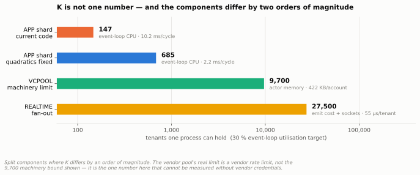
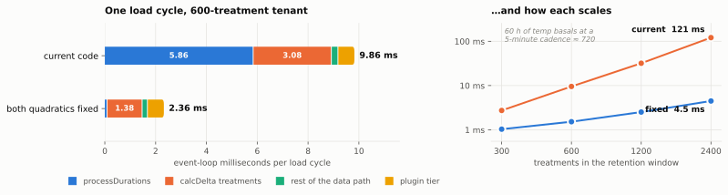

Nightscout multitenancy: evidence and options¶
Record
Record as of 2026-09-09. A point-in-time document; it is not kept up to date.
Contributor-facing. Snapshot — describes 2026-09-09, revised through 2026-09-14. Status: superseded for decisions; retained as the evidence base. Current decisions: execution plan §1. Where a recommendation below contradicts a decision, a bracketed note says so in place.
Date: 2026-09-09. Companion to Nightscout modernization review and proposed next steps; deliberately tangential to that work and not dependent on its outcome.
Nothing here is a proposal to merge. The deliverable being requested is evidence.
Revised 2026-09-14 after maintainer direction, on five counts. (a) The tenancy target
is settled: bulk Nightscout-as-a-service hosting, treated as a superset so that
families, small communities and clinics are configurations of the same system; self-hosted
single-tenant remains first-class, permanently, on data-rights and mission grounds
(§11). (b) Per-tenant export and delete are confirmed requirements, not options.
(c) Host-based routing is the lean, to avoid forcing changes on edge devices and mobile
uploaders (§11 Q3). (d) §3's hazard list is partly overtaken by events — the §3.1
blocker is already fixed on chore/nightscout-modernization, and one §3.2 instance is
deleted there; §3 now carries per-branch status. (e) §7.4 overstated resident memory
by assuming every tenant's ddata stays resident; residency is a policy, and the
correction moves the binding constraint from memory to load-cycle query rate — see the new
§7.4.1. A storage recommendation answering "Postgres+RLS or Mongo?" with a migration path
for an existing hoster is added as §6.7.
Superseded in part, 2026-09-14 (third pass) — read this first. The quadratics are now PR #8733, so the fixed cycle is the baseline and no longer a branch of the decision tree. Measuring the REST tier for the first time ({R} §12) corrected three figures below and reversed §5's rejection of D:
cache.insertData's defensive deep clone is 4.08 ms — 65 % of the post-#8733 load cycle, dropping K from 685 to 239; the resident figure omitsctx.cache(1,204 → 2,652 KB/tenant); and the alarm slice models one plugin of eighteen (0.6 → 50.6 KB). At 10,000 tenants a stateless decomposition costs 5 processes, 0.5 GB and 633 DB ops/s against 10–13 processes, 5–26 GB and 4,285–6,183 ops/s resident. The component recommendation that follows now lives in Deployable components; §5, §7.4, §7.5 and §10.5 below are the record of how it was reached, not the current recommendation.
Experiments run 2026-09-14 — see K, residency and the two quadratics. They resolve §5's B/C/D/E choice and size K, and
they invalidate part of §7.5: tools/mt-bench/gen.js gives every document the same
_id, so both hot loops break on first match and the quadratics were never exercised. The
real per-cycle cost is 9.5 ms, not 0.03 ms, 63 % of it in processDurations — a fourth
cost centre §2.1 does not list. Corrections are marked inline in §2.1, §5, §7.4, §7.4.1
and §7.5.
TL;DR¶
The first clause of this recommendation did not survive the third pass. "Hold many tenants in one process" assumed residency was required; it is not, and it is the expensive half. The isolation and runtime clauses stand. Current recommendation: Deployable components.
Recommendation: extend cgm-remote-monitor to hold many tenants in one process; adopt Postgres RLS (or an equivalent storage-enforced predicate) as the isolation primitive; stay on Node. [Decided since: D2 shared storage with a tenant discriminator and D3 PostgreSQL + RLS for the multitenant service; D4 keeps MongoDB permanently for single-tenant — plan §1.] Confident on the architecture axis; "10 000 tenants" is a target to design towards and then verify, not a number demonstrated (§10.1).
Five findings that should change the intuition — all reproduced on a re-verification pass (§1 explains the confidence tiers):
| # | Finding | Evidence |
|---|---|---|
| 1 | One process holding N tenants costs 2.2 MB/tenant; a process per tenant costs 55 MB. Worker threads are not a middle ground — at realistic code size they cost the same as processes, because isolate count is the driver, not process count | §7.4 |
| 2 | Today, code and runtime outweigh tenant data ~80:1. A bare Nightscout pod is ~99 MB RSS before loading one document; that tenant's actual ddata is ~1.2 MB |
§7.4, §2.7 |
| 3 | Representation beats language. Columnar JS (9.9 KB/tenant) ties columnar Rust (10.2 KB), and untyped Rust loses to V8 by ~1.9× on time and ~7.7× on memory. "Rewrite in Rust" without a schema is a regression — which makes schemas performance infrastructure, not documentation | §7.3 |
| 4 | Multitenancy and a runtime rewrite are substitutes, not complements. Both attack the same ~41 MB per-process constant. Doing both buys the second one almost nothing — this is the actual fork in the road (§11 Q8) | §7.3 |
| 5 | RLS is fail-closed by construction, and cheap. A query with zero tenant_id predicate in the SQL returns only the bound tenant's rows; an unbound connection returns zero rows, not an error and not everything. Overhead ~0.3–0.6 ms — noise at Nightscout's ~14 queries per 1–5 s. It converts "every query must remember to filter" into "every connection must remember to bind": one call site instead of every call site |
§6.1 |
The blocker has been fixed — on a branch that has not landed. lib/notifications.js:15
holds the alarm/ack/silence map at module scope with no tenant dimension on dev: N
tenants in one process would share it, and tenant A acknowledging a hypo alarm would silence
tenant B's. On chore/nightscout-modernization (PR #8605) commit 9e869662, Own
notification alarm state per service and clear it on teardown, moves that map inside
init(env, ctx) with a teardown guard — for teardown-ownership reasons, not tenancy
ones. The safety blocker is therefore closed on the modernization branch and open on
dev, which makes #8605 the vehicle for this work rather than an obstacle to wait out
(§3.1, §11 Q7).
Storage: do not start with the engine question. §6.7 recommends a three-stage ladder
that decouples the tenancy migration from the storage migration, because the second is
the expensive, irreversible one and the first delivers the measured 10–20× win on its own.
The number that decides when stage 3 becomes necessary is 35 secondary indexes per tenant
database (counted from indexedFields), not a preference between engines.
What ships regardless of the tenancy decision — and is the entire near-term roadmap for a maintainer not yet sold on multitenancy (§9.2 steps 1–4):
- Layer 0: generate validators from
specs/openapi/, formalizing the 22 fields already declared inindexedFields. Correctness win today, and the measured precondition for every later win. - Layer 1b′: close the §3 hazards. Independently reviewable.
- Layer 3: columnar hot window — ~20× less memory and ~500× faster wake on the SGV window. Self-hosted single-tenant operators get this the day it ships.
What is not measured, and should gate any commitment: the 2.2 MB/tenant figure against
the real ddata/dataloader code rather than a synthetic fixture (EXP-MT-035); a single
Postgres primary's ceiling past 500 tenants (EXP-MT-040); Kubernetes control-plane
behaviour at 10 000 tenants even under a reduced-object model. §8.5 pre-registers the
decision rule — if no arm clears it, the finding is "keep the single-tenant deployment
model," which is itself a publishable result.
Two things worth knowing that are not about multitenancy at all: the re/$regex
filter operator reaches MongoDB with no pattern guard, no index requirement, and no
maxTimeMS or .hint() anywhere in the query path — a live, unmitigated ReDoS and
full-scan vector today, which multitenancy would sharpen into a noisy-neighbour problem
(§6.5). And the O(n²) merge and delta sites are a fairness problem, not a throughput
problem: invisible at typical sizes, an 81 ms event-loop stall at 5 000 treatments, and
the "fix" is 3× slower at normal sizes. Justify them with p99 under a noisy tenant, and
make them adaptive (§7.5).
1. Scope, provenance and confidence¶
Nightscout's single-tenant design is a real feature: one process, one env, one
API_SECRET, one Mongo database, one in-memory data universe. It also means the unit of
deployment is a person — one bill, one upgrade, one TLS cert, one set of environment
variables per person with diabetes. That per-capita cost is the ceiling on who can use
Nightscout, and the reason distributed care teams, clinics, research cohorts and
"family runs five sites" cases are painful.
The maintainers' long-standing intuition is that the fix lives at ddata: if the runtime
data universe were keyed by tenant, the rest of the server might follow. This document
tests that intuition against the code, sets out the candidate architectures, and proposes
how to measure rather than argue the tradeoffs.
Sources inspected. externals/cgm-remote-monitor-official (v15.0.9, dev @
a8888f0d, node >=20.x, express 4.22.2, socket.io ~4.8.3, mongodb driver ^5.9.2, no
ODM) and externals/nocturne (.NET 10 + PostgreSQL, host-based multitenancy, with two
small Rust crates). externals/cgm-remote-monitor in this workspace is a 0.5.0 historical
checkout; all Nightscout citations use -official.
Confidence tiers. Every number below carries one of three labels, because they are not equally trustworthy:
| Tier | Meaning |
|---|---|
| measured | Produced by a committed script in tools/mt-bench/, re-run and reproduced within a few percent on a second pass |
| carried | Produced by a committed script, but not re-run on the second pass (needs deps or fixtures reinstalled) — treat as ordinal, re-run before quoting |
| inferred | Reasoned from code or from another project's records, not executed here |
All measurements come from a shared development machine with no remote database in the loop. They rank hypotheses; they are not capacity results. A real deployment adds Mongo/Atlas round-trips expected to dominate every local cost here.
2. What is actually single-tenant today¶
2.1 The runtime data object and its three cost centres¶
ddata is a plain object created once at boot holding the whole site's recent world —
sgvs, treatments, mbgs, cals, profiles, devicestatus, food, activity,
dbstats, lastUpdated (lib/data/ddata.js:11-22). Processing attaches derived arrays
(sitechangeTreatments, insulinchangeTreatments, batteryTreatments,
sensorTreatments, profileTreatments, combobolusTreatments, tempbasalTreatments,
tempTargetTreatments) at lib/data/ddata.js:249-337.
| Cost | Location | Shape |
|---|---|---|
| JSON deep clone of every loaded document | lib/data/ddata.js:29-79 (processRawDataForRuntime) |
JSON.parse(JSON.stringify(...)) per load |
| Old/new merge | lib/data/ddata.js:82-106 (idMergePreferNew) |
O(old × new), not hash-indexed |
| Client delta | lib/data/calcdelta.js:15-76 |
O(old × new) with deep compares |
| Duration processing | lib/data/ddata.js:198-247 (processDurations) |
O(n²) twice — a filter/findIndex dedup and an explicit treatments × treatments overlap cut |
Added 2026-09-14. The fourth row was missing and is the largest of the four: measured at 63 % of one load cycle, against 34 % for the delta and under 1 % for the merge. At 5 000 temp basals it alone costs 343 ms per load. See the experiment report §3.
clone() (:108-123) and dataWithRecentStatuses() (:126-145) produce the
client-facing projection.
2.2 Cache and retention windows¶
lib/server/cache.js:26-31 sets retention to 60 h treatments, 48 h entries, 24–48 h
devicestatus. Steady-state working set is roughly that, plus long-tail queries merged into
ddata.treatments (profile switches up to ~12 months; sensor/site/insulin/battery changes
up to ~62 days — lib/data/dataloader.js:341-430).
The cache also keeps removal generations per datatype so the loader can detect a delete
that landed mid-query and retry rather than resurrect the document
(lib/server/cache.js:29-34, lib/data/dataloader.js:159-196, :301-332, :456-489).
Any tenant-aware cache must preserve this property per tenant.
2.3 The load cycle¶
Nine loaders run in parallel per update (lib/data/dataloader.js:136-146), expanding to
roughly 14 database operations per load: entries, treatments, profile switches, six
"latest special treatment" queries, profile, food, devicestatus, activity, dbstats.
Incremental loads shrink the rows (15-minute windows — :159, :301, :456) but not
the query count.
Loads are debounced on the event bus (lib/server/bootevent.js:301-330;
UPDATE_DEBOUNCE_WAIT = 1000, UPDATE_MAX_WAIT = 5000, heartbeat default 60 s —
bootevent.js:3-4, lib/settings.js:37, lib/bus.js:7), guarded by a concurrency flag
that prevents overlapping loads on the shared ddata (bootevent.js:301-318) — a guard
that must become per tenant.
After each load, plugins run against a freshly built sandbox (bootevent.js:332-341):
var sbx = require('../sandbox')().serverInit(env, ctx);
ctx.plugins.setProperties(sbx);
ctx.notifications.initRequests();
ctx.plugins.checkNotifications(sbx);
ctx.notifications.process(sbx);
This is the most encouraging fact in the codebase. sandbox.serverInit(env, ctx)
(lib/sandbox.js:45-84) is already a per-invocation object parameterised over
(settings, data, time). The plugin contract is already tenant-shaped; ctx is not.
2.4 Realtime¶
Socket.IO uses exactly one room: io.to('DataReceivers').compress(true).emit('dataUpdate', delta)
(lib/server/websocket.js:150, join at :792). Per-connection authorization exists and
resolves secret/token into shiro permissions (:123-140), but the resolved subject does
not select a data context. Tenant rooms (DataReceivers:<tenantId>) plus tenant-bound
authorization are a correctness and safety requirement, not an optimisation: a leak here
is another person's glucose and alarms.
2.5 The storage seam — the single most important structural finding¶
lib/storage/mongo-storage.js is a connection/collection factory (:105-205 connect,
:207-209 raw collection, :211-223 indexes). Domain modules (lib/server/entries.js,
treatments.js, devicestatus.js, profile.js, food.js, activity.js) receive raw
Mongo collections and use driver semantics directly: find/findOne/sort/limit/toArray,
insertOne/insertMany, upserts, ObjectId, Mongo query operators, $-aggregation in
reporting paths. API v3 adds its own query translation (lib/server/query.js, lib/api3/).
There is no adapter seam capable of accepting a different query model today. API v3's
lib/api3/storage/mongoCachedCollection/ and mongoCollection/ add a thin caching layer,
but it is Mongo-shaped too. Every storage option in §6 depends on introducing that seam
first.
2.6 The process-global surface¶
env and env.settings (lib/server/env.js:106-208, lib/settings.js:7-31, :261-280,
:328-340), API_SECRET, authorization storage/roles/subjects (bootevent.js:198-203),
the Mongo pool, the cache, the dataloader, the websocket namespace, the plugin registry
and its per-plugin closure state, external clients and timers, the event bus, language, and
enclave key material (lib/server/enclave.js:1-22).
Per-tenant settings surface (the real work item): units, timezone/language, alarm thresholds and snooze intervals, alarm type selection, enabled/shown plugins, raw-BG visibility, device provenance obscuring, devicestatus retention, bridge/connect credentials, notification credentials and recipients, auth defaults.
2.7 Sizing anchor — measured¶
node --expose-gc, 200 tenants, one ddata-shaped object each (576 SGVs, 600 treatments,
576 Loop-style devicestatus with 72-point prediction arrays; no derived arrays, no clones,
no lastData):
That is the floor, not the estimate. Steady state additionally holds cache arrays,
derived treatment arrays, the previous lastData for delta computation, and transient
clones during load. Treat 4–8 MB resident per active tenant as a hypothesis to be
measured (EXP-MT-035), not a number to quote. At 6 MB, 1 000 tenants ≈ 6 GB of live JS
objects before headroom — which is why the residency question (§5C) matters more than the
storage question.
2.8 The runtime as a component graph¶
Everything above, as components and the relationships between them. The chokepoints that assume a single tenant are shaded: each is a real object that exists exactly once per process and that every request implicitly shares.
graph TB
UP["<b>Uploaders</b><br/>xDrip+, AAPS, Loop, Trio,<br/>nightscout-connect"]
subgraph PROC["One Nightscout process = one person's site"]
direction TB
APP["express app<br/>lib/server/app.js"]
AUTH["authorization<br/>secret/token to shiro perms<br/><i>resolves a subject, but selects<br/>no data context</i>"]
BUS["bus<br/>tick 60 s; debounce 1 s, maxWait 5 s"]
GUARD["dataloadRunning flag<br/>one guard, one shared ddata"]
ENV["env / env.settings<br/>units, thresholds, plugin set,<br/>vendor credentials"]
LOADER["dataloader<br/>9 parallel loaders, ~14 DB ops/cycle"]
CACHE["cache<br/>48 h entries, 60 h treatments,<br/>+ removal generations"]
DDATA["ddata<br/>the site's whole recent world<br/>~1.2 MB measured"]
SBX["sandbox<br/><i>fresh per load, over<br/>settings + data + time</i>"]
PLUGINS["plugins registry<br/>IOB, COB, AR2, loop, openaps"]
NOTIF["notifications<br/>alarm evaluation and delivery"]
WS["websocket.js<br/>one room: 'DataReceivers'"]
STORE["mongo-storage<br/><b>hands out raw collection handles</b><br/>no query-model seam exists"]
end
DB[("MongoDB<br/>one database per site")]
FOL["<b>Followers and browser</b><br/>REST + socket.io"]
UP -- "POST /api/v1/*" --> APP
APP --> AUTH
APP -- "emits data-received" --> BUS
BUS --> GUARD
GUARD --> LOADER
ENV -. "read directly" .-> LOADER
LOADER -- "find/sort/limit, Mongo<br/>operators, ObjectId" --> STORE
STORE --> DB
LOADER -- "incremental window" --> CACHE
CACHE -- "retained rows" --> LOADER
LOADER -- "idMergePreferNew,<br/>JSON deep clone" --> DDATA
DDATA -- "data-loaded" --> SBX
ENV -.-> SBX
SBX --> PLUGINS
PLUGINS --> NOTIF
DDATA -- "calcdelta vs lastData" --> WS
AUTH -.-> WS
WS -- "dataUpdate, one broadcast" --> FOL
NOTIF -- "alarms, pushover" --> FOL
style ENV fill:#f8d7da,stroke:#a33,color:#111
style DDATA fill:#f8d7da,stroke:#a33,color:#111
style CACHE fill:#f8d7da,stroke:#a33,color:#111
style WS fill:#f8d7da,stroke:#a33,color:#111
style GUARD fill:#f8d7da,stroke:#a33,color:#111
style STORE fill:#fff3cd,stroke:#a1791b,color:#111
style SBX fill:#d4edda,stroke:#2c7a3f,color:#111Two relationships in this graph decide how hard multitenancy is.
sandbox is green because it is already parameterised. It is constructed fresh on every
data-loaded event over (settings, data, time) — so the entire plugin tier downstream of
it is already tenant-shaped and needs no change. The single-tenant assumption is not in the
data model; it is in the fact that bootevent() is called once and the resulting ctx is
bound to module scope by its caller.
mongo-storage is amber because it is a factory, not an adapter. It hands dataloader
and every domain module a raw Mongo collection, so driver semantics leak into ~30 call
sites. That single relationship is why §6.2's repository seam is a prerequisite for every
storage option, and why isolation currently has nowhere to be enforced except in each
call site's own filter.
3. Cross-tenant hazards already present in the code¶
Any shared-process design (§5B–E) inherits these. They are listed first because they are correctness and safety gates, not performance items — an arm that trips one is disqualified regardless of throughput (§8.4).
3.1 Shared alarm state — the blocker¶
lib/notifications.js:15 declares var alarms = {}; at module scope, outside
init(env, ctx), keyed only by level + '-' + group. There is no tenant dimension,
and the only reset is test-mode-only (resetStateForTests, :208).
bootevent.js:253 constructs notifications per-ctx
(ctx.notifications = require('../notifications')(env, ctx)). So calling the factory
chain N times — precisely the Layer 2 proposal (§9) — yields N notification objects
sharing one alarm/ack/silence map. Tenant A acknowledging a hypo alarm would silence
tenant B's alarm at the same level and group.
§5.1 draws this as a system relationship: every tenant's plugin tier writing into one
shared box. This is the one place the "tenants as data" refactor is not merely wiring, and
it lands on the safety question maintainers should care about most (§11 Q5). It is a small, bounded fix
— thread a tenant key into getAlarm's composite key — but it must be a named
prerequisite of Layer 2, not discovered during it.
Note this is also the only module-level mutable state of this shape in server-side
lib/ (repo-wide scan; lib/client/* hits are browser-side). The general instinct in
§9.1 — that the factories are already tenant-shaped — is right. This is its exception.
Status, re-checked 2026-09-14. Still present on
origin/dev(a8888f0d). Fixed onorigin/chore/nightscout-modernizationby commit9e869662, which movesvar alarms = {}insideinit(env, ctx), adds aclosedflag guardinggetAlarm,initRequestsandrequestNotify, and comments the intent: "Snoozes and pending requests belong to this service, not the module cache." The change was made to own teardown, not to enable tenancy, but it is the fix this section asks for. Two consequences: the Layer 2 prerequisite is satisfied by #8605 rather than by separate work; and it must be protected by a regression test, because nothing in that branch records why the state is per-instance, so a future refactor could hoist it back with green CI.
3.2 Plugin closure state¶
lib/plugins/speech.js:3-5 holds lastEntryValue, lastMinutes, lastEntryTime at
module scope. Plugins are per-tenant instances under Layer 2, but module-scope variables
are not. A lint rule or test banning module-level mutable plugin state is a cross-cutting
requirement (§5), and speech.js is the known instance to fix.
A second, previously unlisted instance: lib/plugins/bridge.js:4 holds
mostRecentRecord at module scope, and it is not cosmetic — it is read on every poll to
compute the next fetch window (bridge.js:119, opts.fetch.minutes = parseInt((new
Date() - mostRecentRecord) / 60000)) and to decide whether a poll is due at all
(bridge.js:89, next_entry_expected = mostRecentRecord + msRUN_AFTER). Two tenants'
Dexcom-Share bridges sharing one process would corrupt each other's fetch windows —
tenant A's bridge could compute its next fetch size from tenant B's most-recent-record
timestamp, silently over- or under-fetching. This matters specifically for §5.6 below:
vendor-connectivity plugins are not the "purely stateless" thing §5.3 characterized them
as at the code-shape level (their invocation is interval-shaped and side-effect-free
between ticks, which is what §5.3 was about) — but this one instance shows the same
module-scope hazard class as speech.js, needing the identical fix (a per-instance
closure variable, not module scope) before Layer 2 shared-process work, regardless of
which storage engine or deployment target is chosen.
Status, re-checked 2026-09-14.
lib/plugins/speech.js:3-5is unchanged on both branches — still the open instance.lib/plugins/bridge.jsis deleted onchore/nightscout-modernizationby the legacy-Dexcom retirement, which removes themostRecentRecordhazard as a side effect;lib/plugins/mmconnect.jsgoes the same way. That the hazard class was closed twice by accident and once not at all is the argument for the lint rule this section asks for: a test banning module-scope mutable state inlib/plugins/is what makes the fix durable, and it is cheap enough to land against either branch today.
3.3 Direct process.env reads outside the env module¶
17 occurrences across 4 files on dev: lib/server/app.js (6), lib/api3/index.js (5),
lib/plugins/webhook.js (4), lib/server/bridge-connect-compat.js (2).
Status, re-checked 2026-09-14. On
chore/nightscout-modernizationthe count is 14 across 4 files —bridge-connect-compat.jsis gone with the bridge retirement andapp.jsdrops one — but 4 of the 14 are new, inlib/storage/mongo-client-configuration.js. That file did not exist before; it reads connection configuration directly fromprocess.env, which is precisely the per-tenant configuration this section warns about, now in the storage layer rather than the API layer. Net progress is roughly zero and the location got more load-bearing.
lib/api3/index.js:22-25 is the consequential one — a generic
CUSTOMCONNSTR_<var>/<var> resolver, i.e. connection-string resolution, which is
per-tenant configuration reached without going through env. Small and closable, but it is
in the API v3 layer, not only in peripheral files.
3.4 Single socket room and unscoped socket authorization¶
§2.4. Tenant-scoped rooms plus tenant-bound socket authorization.
3.5 Shared concurrency guard and no fairness policy¶
§2.3's dataloadRunning flag guards one shared ddata. Per-tenant guard, backpressure and
a fairness policy are required so one tenant cannot monopolise the loop (§7.5).
3.6 Unbounded query cost¶
§6.5. Not multitenancy-specific, but multitenancy converts it from a private problem into a noisy-neighbour amplifier.
4. What Nocturne settled¶
Nocturne is the strongest available evidence because it solved this in production shape.
| Concern | Nocturne's answer | Citation |
|---|---|---|
| Tenant identity | tenants row; Guid Id stable, mutable Slug for routing |
Entities/TenantEntity.cs:8-91 |
| Request resolution | Host header subdomain {slug}.{BaseDomain}, not path prefix or token claim |
Multitenancy/TenantResolutionMiddleware.cs:14-15, :244-248 |
| Special modes | apex/single-tenant fallback, tenantless setup routes, {token}.share.{domain} |
TenantResolutionMiddleware.cs:249-279 |
| Isolation | Shared tables + tenant_id, EF Core global query filter and PostgreSQL RLS |
NocturneDbContext.cs:14-64; Migrations/20260227034745_EnforceMultitenancy.cs:66-76 |
| Fail-closed | FORCE ROW LEVEL SECURITY; unpinned context ⇒ zero rows; roles NOSUPERUSER NOBYPASSRLS |
Interceptors/TenantConnectionInterceptor.cs; CLAUDE.md |
| Credential binding | Token tenant claim must match host-resolved tenant, else reject | Handlers/LegacyJwtHandler.cs:73-97, DirectGrantTokenHandler.cs:127-152 |
| Cache | Many small tenant-GUID-keyed caches with TTL + explicit invalidation; no monolithic per-tenant aggregate | Services/Entries/EntryCacheAdapter.cs:24-120 |
| Realtime | SignalR groups always prefixed "{tenantId}:{group}"; hub rejects tenantless connections |
Hubs/TenantAwareHub.cs:29-74 |
| Benchmarks | BenchmarkDotNet micro/query benchmarks + RLS isolation integration tests | tests/Performance/**, tests/Integration/**/Rls/* |
Four transferable lessons:
- Isolation must fail closed at the storage layer, not only in application code. RLS is the difference between "we filter correctly" and "we cannot fail to filter."
- Host-based routing keeps existing clients working. Every uploader, follower app and
API_SECRETalready points at a hostname; subdomain-per-site means xDrip+, AAPS, Loop, Trio and nightscout-connect need no changes. - Nocturne deliberately did not build a per-tenant
ddata. It uses bounded, individually keyed, TTL'd caches — the opposite of Nightscout's design, and a direct challenge to the "just make ddata multitenant" instinct. - Its native boundary is stateless and coarse-grained — one JSON envelope per evaluation, which is the shape that survives an FFI/WASM boundary.
Two caveats Nocturne itself records: the browser bridge fans some notifications to the
whole tenant room rather than per-subject rooms (Services/Realtime/RealtimeGroups.cs:32-57
documents this in its own remarks), and there is no published tenants-per-instance target
and no tenant-count scaling benchmark — no k6/NBomber/Socket.IO load harness exists in
the repo (verified). Nocturne proves the correctness of an approach, not its capacity.
On Nocturne's Rust: do not index the "should we rewrite in Rust" question on Nocturne's
example. The engine selector defaults to the managed C# evaluator; Rust runs only in
shadow (side-effect-free) or explicit rust mode
(Services/Alerts/Engines/AlertEngineSelector.cs:6-13, :28-45). Nocturne's production
default ships zero Rust in the request path, and the crates are a small, bounded,
swappable slice of the codebase (6 618 lines of Rust). Its actual multitenancy lever is
shared-process + RLS-shared-Postgres — a representation and isolation-primitive choice,
not a language choice.
4.1 Should cgm-remote-monitor depend on Nocturne?¶
Four options were considered; the evidence favours the middle two:
- Independent implementation — no new runtime, community-maintainable in JS, but duplicates solved work and risks two divergent tenancy semantics.
- Shared contracts (recommended) — adopt Nocturne's tenant model, slug/GUID semantics,
RLS pattern and group naming as a spec, with independent code. Cheap; buys interop and
migration paths. Grounds already exist:
specs/openapi/andmapping/cross-project/terminology-matrix.md. - Shared stateless algorithm cores (recommended, conditional) — reuse
nocturne-alerts-core-style cores for parity testing. Pays off only where the hot path is genuinely CPU-bound (§9 Layer 5). - Nocturne as data plane — cgm-remote-monitor becomes a UI/plugin tier over Nocturne's API. Inherits RLS and benchmarks, but Node deployment then requires .NET+Postgres, adds a hard dependency on another project's roadmap, and makes hosting harder for small operators. This should be argued for explicitly if anyone wants it, because it inverts the project's independence. §6.1 and §7.3 find nothing it supplies that shared contracts do not.
5. Candidate architectures¶
The choice is where tenant state lives, decomposing into two independent axes: isolation unit (process vs. context) and residency (always-resident vs. tiered vs. computed-on-demand). A–D are points on those axes; E is a multiplier on whichever of B/C/D wins, not a peer of them.
A. Process per site (today, at scale). One process per person, N containers. Zero code change; isolation by OS. Cost is the node baseline plus a Mongo pool plus a container per person. Worth benchmarking as the control arm: everything else must beat it on $/tenant while matching it on isolation.
B. Context per tenant, one process ("multi-ctx"). ctxFor(tenantId): per-tenant
settings, ddata, cache, dataloader, plugins, bus, authorization, socket room.
Pro: smallest conceptual change; the sandbox contract already fits (§2.3); plugin API
unchanged. Con: N × timers, buses and plugin instances; memory scales with registered
not active tenants; §3's hazards become live; one tenant's O(n²) merge stalls the shared
loop. Probably the honest first prototype (§7.4 measures it at 2.2 MB/tenant), and the
option most likely to hit a wall on registrations.
C. Context per tenant + residency tiering ("hot/warm/cold"). As B, but ddata is materialised on demand and evicted on inactivity: hot (active viewer ⇒ resident ddata, deltas, plugins, alarms), warm (recent writes, no viewers ⇒ cache only, rebuilt lazily), cold (uploads land in storage). Alarms are the hard part: a person with no browser open still needs hypo alerts, so a cheap always-on bounded alarm evaluator must run for cold tenants without materialising a full ddata. Pro: cost tracks concurrency, not registrations — most sites have one viewer and long idle periods, so this is where the order of magnitude lives. Con: needs a real eviction policy, a cold-start latency budget, and a separated alarm path. Wake cost now looks affordable (~3–4 ms from a local store, near-zero from a columnar cache — §7.1, §7.2), so the hard part is policy and cold alarms, not latency. The most promising direction, and what the benchmark plan should prove or kill.
D. Stateless server, storage-resident derived data. No resident ddata; every read pages
from the store, which does the ranges and aggregation. Pro: memory ≈ O(concurrent
requests); horizontal scaling trivial; restart free. Con: the client protocol is
delta-oriented (calcdelta.js) and plugin chains assume a whole-world object;
recomputation per request could be more total CPU than one resident copy. Needs
measurement, not assertion.
E. Sharded: K tenants per process, M processes. Orthogonal and pragmatic. Bounds blast radius and GC pause impact, allows rolling upgrades, lets a noisy tenant be moved. Any serious deployment ends up here; the open question is best K, not B-vs-E.
Measured 2026-09-14 — the choice is largely settled. See the experiment report.
- B is the right substrate and cheaper than believed: a fully-processed real
ddatatenant is 1,204 KB, not the synthetic 2.2 MB.- C is what makes a hoster's numbers work. The alarm-critical slice §7.4.1 requires measures 0.6 KB — a 2,000× hot/cold ratio, so alarm coverage for 10,000 cold tenants costs ~6 MB.
- ~~D loses, and the margin is the finding.~~ Reversed on the third pass. The original claim: a full stateless rebuild is 10.8 ms against 9.5 ms for an incremental cycle, and once the quadratics are fixed the incremental path wins by 7×. Two things were wrong with deciding it that way. The cycle figure omitted
cache.insertData's 4.08 ms defensive clone ({R} §12.3), so the comparison flattered the resident path; and a CPU margin is the wrong axis for choosing between a design needing a tenant→shard map, sticky routing, an eviction policy and a rebalancer and one needing none. On cost — the operator's stated objective — stateless wins by 2–3× in processes and ~10× in database operations, because the resident path polls ~14 ops per tenant per cycle on a timer whether or not anything changed. See Deployable components.- E is confirmed as deployment shape, not a peer — and M is small. For 10,000 tenants at a 15 % active fraction, M ≈ 16 application shards on current code and M ≈ 2 with two functions fixed. Shard for blast radius, upgrades and noisy-tenant relocation; do not shard for capacity, which would be buying hardware to run an O(n²) loop.
K is not one number — measured 2026-09-14 for three of five components:
Component Binds on K (tenants/process) APP shard, current code event-loop CPU, 10.2 ms/cycle 147 ~~APP shard, quadratics fixed~~ ~~event-loop CPU, 2.2 ms/cycle~~ ~~685~~ APP shard, post-#8733, incl. cache.insertDataevent-loop CPU, 6.27 ms/cycle 239 VCPOOL machinery actor memory, 419 KB/account ~9 700 REALTIME fan-out ~31 KB/socket + ~55 µs/tenant emit ~27 500 ROUTER / AUTH stateless unbounded at this scale (unmeasured) 
One earlier guess here was wrong by two orders of magnitude: the vendor pool's machinery holds ~9 700 accounts, not 10¹–10². What binds it is the vendor's per-account and per-egress-IP rate limiting, which cannot be measured without credentials (EXP-MT-051). Two structural findings that do not need them: actor start is a thundering herd — 800 accounts fire their first request inside one second, on every restart and deploy, because
run()has no jitter — and they stay phase-locked on the same five-minute boundary afterwards. Start and interval jitter are small, obviously correct changes to make before any pool runs at density. The exponential backoff inlib/backoff.jsdoes work: under a failing auth mock one actor made 4 attempts in 12 s.Split where K differs by an order of magnitude — that is the APP shard against everything else. Realtime and the vendor pool are within an order of magnitude of each other, so splitting them apart costs a hop for no measured benefit.
5.1 The same system, tenant-scoped — and what does not scope with it¶
Architecture B applied to §2.8's component graph. The per-tenant boxes are the same factories called N times; the differences from §2.8 are the three new components at the edges (tenant resolution, per-request connection binding, tenant-scoped rooms) — and one component that does not become per-tenant on its own.
graph TB
CA["<b>alice.example.org</b><br/>uploaders + followers"]
CB["<b>bob.example.org</b><br/>uploaders + followers"]
RES["<b>tenant resolution middleware</b> — new<br/>Host header to slug to tenantId,<br/>path prefix as fallback; a token's tenant<br/>claim must match the host-resolved<br/>tenant, else reject"]
subgraph PROC["One process — Map<tenantId, ctx>"]
direction TB
subgraph TA["ctxFor('alice')"]
direction TB
AE["settings"] --> AL["dataloader + cache"] --> AD["ddata ~2.2 MB"] --> AS["sandbox to plugins"]
end
subgraph TB2["ctxFor('bob')"]
direction TB
BE["settings"] --> BL["dataloader + cache"] --> BD["ddata ~2.2 MB"] --> BS["sandbox to plugins"]
end
ALARMS["<b>notifications.js:15 — the alarms map</b><br/>declared at module scope:<br/><b>ONE per process</b>, keyed level + group,<br/><b>no tenant dimension</b><br/><i>calling the factory N times does<br/>not give you N of these</i>"]
FAIR["per-tenant concurrency guard,<br/>backpressure, fairness policy"]
BIND["<b>per-request connection binding</b> — new<br/>set_config('app.current_tenant_id', id, true)<br/><i>transaction-local, safe under pooling</i>"]
WS["websocket<br/>rooms become 'DataReceivers:tenantId'"]
end
PG[("<b>Postgres</b> — shared tables + tenant_id<br/>ENABLE + FORCE ROW LEVEL SECURITY<br/>app role NOSUPERUSER NOBYPASSRLS<br/><i>an unbound connection returns 0 rows</i>")]
CA --> RES
CB --> RES
RES -- "alice" --> AE
RES -- "bob" --> BE
AL --> FAIR
BL --> FAIR
FAIR --> BIND
BIND -- "one bind per request, instead<br/>of a filter per query" --> PG
AD --> WS
BD --> WS
AS == "ack / silence" ==> ALARMS
BS == "ack / silence" ==> ALARMS
ALARMS -. "alice's ack silences bob's alarm<br/>at the same level and group" .-> CB
WS -- "DataReceivers:alice" --> CA
WS -- "DataReceivers:bob" --> CB
style ALARMS fill:#f8d7da,stroke:#a33,color:#111
style RES fill:#d4edda,stroke:#2c7a3f,color:#111
style BIND fill:#d4edda,stroke:#2c7a3f,color:#111
style PG fill:#d4edda,stroke:#2c7a3f,color:#111The two thick edges converging on one red box are §3.1 drawn as a system relationship
rather than a code citation: every tenant's plugin tier writes acknowledgement and silence
state into a single process-global map, because that map is declared at module scope
rather than inside the factory. Everything else in the per-tenant boxes duplicates
correctly when bootevent()'s factory chain is called N times; this does not.
The graph also shows why RLS is the isolation primitive worth adopting (§6.1). BIND is a
single relationship on the path to storage — one middleware, one set_config per
request. The alternative on Mongo is a correct filter on every one of the ~30 edges that
dataloader, lib/api3/generic/* and each plugin draw to the store, with no component
able to enforce that they did.
5.2 Cross-cutting requirements for B–E¶
- Tenant resolution middleware (host, then path prefix as fallback, then token claim verified against the resolved tenant — Nocturne's ordering and its rejection rule).
- Tenant-scoped socket rooms and tenant-bound socket authorization (§3.4).
- Tenant-scoped settings object; every read of
env.settingsaudited (§2.6). - Per-tenant plugin instances, and a lint rule or test banning module-level mutable plugin state (§3.1, §3.2).
- Per-tenant concurrency guard, backpressure and a fairness policy (§3.5).
- Storage-layer fail-closed isolation — RLS, separate database, or separate file (§6.1).
- Per-tenant quotas and accounting: memory, docs, query rate — needed for fairness and for the cost model that justifies the whole exercise.
- Alarm delivery for non-resident tenants, with per-tenant alarm state (§3.1).
5.3 Headless: does removing the browser change the recommendation?¶
A headless deployment target — API/websocket for AID controllers and alarm followers only, no HTML views, no browser session — is worth treating as its own point in the design space, because two of §2's three cost centres exist specifically to serve the browser cheaply, and headless removes that consumer entirely.
What the browser actually causes in §2's component graph. calcdelta.js's O(old×new)
deep-compare (§2.1) and the single 'DataReceivers' socket room (§2.4) exist to turn one
resident ddata into a cheap incremental diff for potentially many concurrently-polling
viewers of the same site — a human refreshing a dashboard, a family member's phone, a
clinic view. An AID controller or alarm follower is not that consumer. Loop, AAPS and
xDrip+ poll on their own schedule (typically every 1–5 minutes), want a small, predictable
response for a known query shape, and have no use for a delta-versus-last-broadcast
optimisation — they already re-request from scratch each cycle. §6.5's proposed query
profiles were arrived at independently of this question, for a different reason (bounding
DoS surface), but they describe exactly the request shape a headless server would only
ever receive.
What's actually left resident, once the browser is gone, is alarm evaluation — and that
does not require the same architecture either. plugins.checkNotifications(sbx)
(bootevent.js:338, §2.3) still has to run against something for cold/inactive tenants
(§3's C tier, §5C) — a person with no viewer open still needs a hypo alert. But this is a
bounded computation over a short recent window (IOB/COB curves, AR2 trend, a handful of
plugins), not a reason to hold a whole site's ddata resident indefinitely. §5D
("stateless server, storage-resident derived data") was previously the least-favoured
architecture in this document specifically because the client protocol is delta-oriented
(§5D's con) — a constraint that assumes a browser. Remove the browser, and D's objection
mostly disappears: there is no delta stream to maintain, so the recompute-per-invocation
cost is the only one left to justify against a resident copy, and that computation is
small and infrequent (once per alarm-evaluation cycle, not once per HTTP poll).
Vendor connectivity is a second, independent thing that does not need a resident
process at all, and this is a finding, not an assumption. lib/plugins/bridge.js:115
(Dexcom Share) and lib/plugins/mmconnect.js:24 (Medtronic CareLink) both run their own
setInterval closure, opened once per process over that tenant's env.extendedSettings
credentials (mmconnect.js:5-8), with no shared state between ticks and no dependency on
ddata/sandbox at all — each tick is "wake, fetch one vendor API with one tenant's
stored credentials, hand the parsed entries to the loader." That shape is a cron job, not
a server: it does not need Node running continuously per tenant, it needs to run on a
schedule and terminate. At 1 000 tenants, 1 000 resident setInterval timers in shared
processes (Layer 2, §9) is a real, avoidable cost and a fairness/backpressure hazard in
its own right (§5.2 item 5) — a scheduled/queued invocation model removes it entirely,
independent of whether the rest of the stack stays Node.
So, directly: scaling the in-process cache/sandbox is very likely not needed for a headless target, on three separable grounds, each independently supported above: (1) the query surface serving AID controllers/alarm followers is already the bounded, typed-profile shape §6.5 recommends regardless of residency, so a well-built query builder against Postgres+RLS (§6.1, §6.6/D) can answer it directly without a resident merge step; (2) alarm evaluation is a small, boundable, event- or schedule-triggered computation (§5D), not a reason to hold megabytes of merged JSON per tenant for months; and (3) vendor polling is stateless-per-tick and belongs on a scheduler, not in a resident timer. What remains genuinely resident-shaped is a browser-serving concern this target does not have.
Low/no-code: what Supabase specifically would and would not buy. Supabase is managed Postgres + RLS + JWT-based auth + Realtime (logical-replication-driven push) + Edge Functions (Deno, per-invocation V8 isolates, cron-triggerable) — and it maps onto this document's own layers more directly than any other option evaluated so far:
| Supabase piece | Maps to | What it removes from application code |
|---|---|---|
| Managed Postgres + RLS | Layer 1b exactly (§6.1, §6.6/D) | Nothing extra over self-managed Postgres+RLS — same set_config-per-request pattern, just operated for you |
JWT auth + RLS policies reading auth.jwt() claims |
Tenant resolution (§5.2 item 1) | Tenant binding becomes a DB-enforced predicate on the presented JWT, not app-tier middleware — collapses §5.2 items 1 and 6 into one enforcement point |
| Realtime (WAL → subscription push) | The delta/broadcast half of §2.1/§2.4 | For a headless follower that wants live updates, Postgres already knows what changed; no app-level calcdelta deep-compare or resident ddata needed to produce a delta at all |
| Edge Functions (Deno, cron-triggerable) | The vendor-connectivity scheduler above | A near-exact fit for bridge.js/mmconnect.js's actual shape — stateless, credentialed, scheduled — with no code-shape change needed to the fetch/parse logic itself, only to how it's invoked |
The honest cost, stated plainly: platform lock-in, and it does not replace the self-hosted target. Every Supabase-shaped piece above is a specific vendor's implementation of an architecture this document already recommends in vendor-neutral terms (RLS, a repository seam, an event-driven scheduler) — adopting it verbatim would tie the multitenant target to Supabase's specific Postgres extensions, Realtime protocol and Edge Function runtime, which is a real, ongoing cost against the ecosystem's self-hosted ethos, and is exactly the kind of two-deployment-model split §10.3 already concluded should be permanent (self-hosted operators keep MongoDB or self-managed Postgres; nothing here proposes removing that path). The correct scoping is: Supabase (or any managed Postgres+Realtime+Edge-Function platform — Neon, Cloudflare with D1/Workers, a self-hosted PostgREST+pg_cron stack) is one implementation of the §6.2 repository seam and the scheduler above, evaluated and swappable behind it, not a hard dependency of the multitenant target itself.
Reorganisation vs. new code, answered directly. The compute logic itself needs almost
no rewriting — §9.1 already established bootevent, sandbox, the plugin registry and
the vendor-connectivity plugins are factory-shaped over (env, ctx) with essentially zero
module-level mutable state, and that finding holds unchanged for a headless target: the
same init(env, ...) calls work whether the caller is a resident process, an on-demand
stateless handler, or (per Supabase) an Edge Function. What is genuinely new, not a
reorganisation, is the trigger model: today's bus (bootevent.js:301-330, a 60 s
heartbeat plus 1 s/5 s debounce) assumes a resident process polling its own timer; a
headless, cost-optimised target instead wants event-triggered invocation — a Postgres
NOTIFY/webhook/queue message on write, driving a stateless alarm-evaluation and
vendor-poll dispatch, rather than N resident bus instances. That scheduler/dispatch layer,
plus stripping the already-separable static-file and browser-socket mounts
(lib/server/app.js:192-197, §2.4), is the actual new-code surface — small, bounded, and
independent of whether the storage/auth layer underneath is self-hosted Postgres+RLS or a
managed platform.
Net recommendation for this target, restated as a change to §9's ordering: for a
headless-only deployment, Layer 2 (shared-process ctxFor(tenantId), §9) is likely
skippable entirely in favour of going from Layer 1 (storage isolation) straight to a
variant of Layer 2/D — an event-triggered, mostly-stateless compute layer over
Postgres+RLS, with the query-profile work of §6.5 doing the load-bearing work of bounding
per-tenant resource cost that a resident, scaled-up sandbox would otherwise have to do.
This should be checked, not assumed: EXP-MT-043/044 (§8.3) are the arms that would confirm
or kill it.
5.4 Does headless preclude real-time push — and where does MQTT fit?¶
No — and §5.3 needs one correction first. §5.3 grouped "browser-socket mounts" with
static-file serving as the thing a headless target sheds; that overstates it. What
headless actually removes is the browser-specific cost centre — calcdelta.js's
O(old×new) diff computed once per load cycle and broadcast to everyone in one shared room
(§2.1, §2.4) — not the general idea of push. A lightweight or mobile-first UI, and for
that matter an AID controller that wants faster-than-polling notice of a new reading, is
exactly a realtime consumer that isn't a browser, and nothing in §5.3's argument
removes the value of push for it; it only argues the current mechanism (one
process-wide Socket.IO room, lib/server/websocket.js:150,792, fed by a resident merged
ddata) is more machinery than a headless deployment needs to produce that push. The
right framing is: keep push, change what produces it.
Correction, from maintainer feedback: MQTT is not a new idea for this codebase, and it
is not required. lib/server/mqtt.js existed in cgm-remote-monitor for bidirectional
mobile-sync support and was removed in 2018 (0e2ae003, "npm update and remove mqtt" —
317 lines of lib/server/mqtt.js plus its test suite deleted, env.js/server.js wiring
removed alongside it). So this section is evaluating bringing back a capability the
project already tried and dropped, not proposing something novel — worth being explicit
about, since the reason it was dropped previously (unclear from the commit message alone;
likely maintenance burden of a second realtime transport, not a technical dead end) is
exactly the kind of cost the "additive" framing below needs to be weighed against, not
waved away. Given that history, MQTT is presented here as one available transport
option for a mobile-first client, not a required piece of the headless architecture —
Postgres logical-replication push alone (below) already closes most of the gap headless
opens, with none of the "run and maintain a broker" cost. Treat what follows as "if a
mobile UI wants MQTT specifically, here is how it would fit," not "MQTT is recommended."
What already generalises, and what doesn't, from §5.3's storage-first architecture. The three transports worth naming, and what each would need:
| Transport | What it needs, on top of §5.3's Postgres+RLS baseline | Fit for mobile/light UI |
|---|---|---|
| Socket.IO (today's mechanism) | The full resident-ddata/calcdelta pipeline (§2.1) to compute a delta, plus per-tenant rooms (§5.1's WS box) instead of one shared room |
Works, but reintroduces exactly the resident-state cost §5.3 argued away — this is the "reorg, not new code" case only if the delta computation moves to a cheap, storage-driven form (below), not if the current in-memory pipeline is kept as-is |
Postgres logical replication → push (Supabase Realtime, or a hand-rolled LISTEN/NOTIFY + pgoutput consumer) |
Nothing beyond Layer 1b (§6.1) already recommended — the database already knows which row changed and for which tenant_id; a change event is the delta, computed by the WAL, not by an app-level deep-compare |
Very good fit, and the recommended default: RLS-scoped subscriptions mean a mobile client can subscribe directly to "my tenant's rows changed" with the isolation guarantee already enforced at the same layer as everything else in §5.3, no per-tenant resident merge step, and no second piece of broker infrastructure to run |
MQTT (broker + per-tenant topic, e.g. tenants/{tenantId}/entries) |
A publish step somewhere in the write path — either the app tier publishes on ingest, or a Postgres→MQTT bridge (e.g. a pg_net/trigger-driven publisher, or a small dispatcher consuming the same WAL/NOTIFY stream as the row above) — plus a broker to operate, the cost that likely motivated dropping it in 2018 |
A real, optional upgrade specifically for battery- and bandwidth-constrained mobile clients over what Postgres Realtime alone gives you (QoS/persistent-session semantics), but not a requirement — worth adding only if EXP-MT-045 shows Realtime's delivery/miss behaviour is measurably worse for the mobile case |
Where MQTT would still be worth it, if chosen. Its concrete advantages over
Realtime/Socket.IO specifically: (1) QoS 1/2 delivery means a phone that drops
connectivity for an hour (subway, flight, low battery) does not miss a hypo alert the way
a disconnected Socket.IO or Realtime client would — the broker holds it for a persistent
session; (2) topic-per-tenant (tenants/{tenantId}/entries, tenants/{tenantId}/alarms)
maps directly onto the tenant-scoped-room pattern §5.1 already establishes for Socket.IO,
so the authorization problem is unchanged — a client still must only be able to
subscribe to its own tenant's topic, enforced the same way (a broker ACL keyed by the same
resolved tenant identity, checked at CONNECT/SUBSCRIBE time, structurally the same
requirement as §5.2 item 2's "tenant-bound socket authorization"); (3) last-will lets
an alarm-follower app publish "I went offline" so a caregiver's dashboard can show
"follower unreachable" rather than silently going stale — a safety-relevant property this
document has not previously had a mechanism for. None of these is free: each is a reason
to reconsider MQTT specifically for a mobile client, not a reason it must be built.
What doesn't change, and is worth stating plainly so this isn't read as walking back
§5.3: none of this reopens the residency question, and none of it makes MQTT mandatory.
Whichever transport carries the push — Socket.IO fed by a lighter delta source, Postgres
Realtime, or (optionally) MQTT — the content of what's pushed should still come from the
same place §5.3 already argued for: a change computed at or near the storage layer
(WAL-driven), not a resident, per-tenant merged ddata recomputed on a heartbeat. The
transport question and the residency question are separable, and this section only
answers the first.
Net effect on the headless recommendation: Postgres Realtime/NOTIFY is the default
recommendation for realtime push in a headless/mobile deployment — it needs no new
infrastructure beyond Layer 1b. MQTT is named as an available, previously-shipped, and
optional upgrade for the mobile-specific QoS/offline case, to be added only if EXP-MT-045
shows a measurable gap Realtime doesn't close, not built by default. Neither choice
changes §5.3's core claim that the in-process cache/sandbox does not need to scale — the
push mechanism sits on top of the same storage-first architecture either way. This is
EXP-MT-045 (§8.3).
5.5 Is a PostgREST-only headless backend feasible? — measured¶
§5.3 asked whether headless changes the residency recommendation; this asks a sharper
version — could the CRUD half of Nightscout's API be served with no Node process at
all, directly by PostgREST against the same RLS table from
§6.1? Tested against a live PostgREST 16.2 + Postgres 16 stack
(tools/mt-bench/postgrest-poc/, committed and reproducible), not asserted from the
project's marketing:
| Test | Live result |
|---|---|
| No JWT presented | 401 — web_anon has zero grants; a permission error, not a silent empty list |
Tenant A JWT, zero tenant_id in the querystring |
5 rows, only tenant A |
Date-range query, PostgREST's native date=gte.<iso>&order=date.desc&select=... |
works — the same operator shape (gte, order, select, limit) as API v3's find[date][$gte] |
Tenant B JWT, limit=1000 |
only tenant B's rows |
| Tampered JWT signature | 401 — verified before RLS is ever reached |
The mechanism needs no custom code: a JWT with a role claim makes PostgREST SET
ROLE per request, and PostgREST always exposes the verified JWT's payload as the
request.jwt.claims GUC — the RLS policy from §6.1 reads tenant_id back out of that JSON
unmodified, same NULLIF(current_setting(...), '') fail-closed shape, no pre-request
PL/pgSQL function required for this case.
What this answers: yes, for the storage-scoped CRUD surface — list/insert entries/treatments, filtered/sorted/paginated, tenant-isolated — PostgREST is a real candidate for the "no Node in the request path" headless target, reusing §6.1's isolation primitive exactly, with query ergonomics close enough to API v3's existing querystring shape (§6.2) to be a plausible drop-in for that portion.
What this does not answer: PostgREST has no place to put computed state.
calcdelta/IOB/COB, alarm evaluation (§3.1's blocker still applies wherever that state
ends up), and vendor-connectivity polling (lib/plugins/bridge.js,
lib/plugins/mmconnect.js, §5.3) all need a process somewhere. The realistic shape is
PostgREST in front for the CRUD surface plus a small stateless service (Node or otherwise)
for computed views and connectors — "PostgREST instead of the CRUD half of Node," not
"PostgREST instead of Node." Postgres generated columns (§6.3) absorb the cheapest of
these (e.g. a delta column); IOB/COB curves are not expressible as SQL generated columns
without reimplementing oref's algorithm in SQL, which nobody here is proposing. This is
EXP-MT-047 (§8.3).
5.6 What sits alongside PostgREST, and does a hoster need a different shape than an indie operator?¶
Three services beyond PostgREST are needed regardless of tenant count, verified against
node_modules/nightscout-connect (the module bootevent.js wires in as
ctx.nightscoutConnect) and lib/plugins/bridge.js/mmconnect.js:
- A tenant-provisioning/auth-minting service. PostgREST verifies JWTs; it does not
issue them. Something has to authenticate a user, look up which
tenant_idthey own, and mint the JWT §5.5'srole/tenant_idclaims depend on — a small, genuinely stateless service (session lookup → sign), the one new component this architecture needs that today's Nightscout doesn't have an equivalent of at all (today's Basic-Auth API-secret model doesn't map to per-tenant JWT issuance). - A realtime fan-out service. Confirmed in §5.4: PostgREST itself has no WebSocket/MQTT
surface. Something has to
LISTENon Postgres'sNOTIFYchannel (or read the WAL) and push to connected clients — Supabase Realtime is one implementation of exactly this, not a dependency this architecture requires by name. - Vendor-connectivity workers — and these are a different problem from (1) and (2), not
a variant of the same one.
nightscout-connect's ownbuilder.jscomposes session/fetch/pollxstatemachines (createSession,createFetch,createCycle,createPoller) with real backoff (lib/backoff.js) — not a stateless request handler. Every source (lib/sources/librelinkup.js:74-117,lib/sources/glooko/index.js:258-,lib/sources/minimedcarelink/index.js:235-) doesauthFromCredentials→session→ repeateddataFromSession(session, last_known), reusing the session token across polls rather than re-authenticating every tick (Glooko's is a scraped CSRF-token web login; CareLink's is a multi-stepsessionID/sessionDataflow) — re-authenticating every poll would itself risk vendor-side rate limiting or lockout. A vendor-connectivity worker is a long-lived, credentialed, per-tenant-account actor holding session/backoff state across ticks, structurally unlike (1) and (2), which are stateless per request. §3.2's newly-flaggedbridge.js:4module-scope hazard is exactly this class of bug: a worker meant to hold state per tenant credential set accidentally holding it globally.
Single-tenant (indie) vs. multitenant (hoster) shape for each of these — this is where the answer genuinely diverges, not a cosmetic detail:
| Component | Indie / single-tenant target | Hoster / multitenant target (T1Pal-, NSPro-shaped) |
|---|---|---|
| CRUD + auth-minting | Today's Node app is already right-sized; no separate service needed | PostgREST + a small auth-mint service, because the economics only work once one process serves many tenants (§7.4) |
| Realtime fan-out | Today's Socket.IO, in-process, is already right-sized | A shared fan-out service multiplexing many tenants' channels — this is the piece with a real concurrency/isolation requirement (§3.4's socket-room hazard, generalized) |
| Vendor connectivity | Today's shape (bridge.js/mmconnect.js/nightscout-connect, one process, N in-process actors) is already close to optimal — one indie site has O(1) vendor accounts |
The scaling axis that actually matters for a 1 000-tenant hoster is not "1 pod per tenant," it's "N actors per worker process," and this is already how nightscout-connect is shaped internally — one process running many xstate actors is exactly the multitenant-friendly shape §7.4 argues for elsewhere in the doc. The hoster-specific work is a scheduler/queue in front (assign tenant accounts to worker processes, rebalance on worker death) plus per-tenant credential storage (§6's RLS/isolation applies to credentials, arguably more sensitively than to glucose data) — not a rewrite of the vendor-fetch logic itself |
Answering "do websocket/MQTT and vendor connectivity need different solutions" directly: yes, and the reason is which side initiates. Realtime push is server→client, triggered by a data change already committed to the store (WAL-driven, §5.4) — the natural shape is a stateless fan-out multiplexer with no per-tenant business logic of its own, just routing. Vendor connectivity is the opposite: an outbound, rate-limited, credentialed pull against a third party that doesn't know about Nightscout's tenants at all, gated by how each vendor's auth works (LibreLinkUp's bearer token, Glooko's scraped CSRF/cookie session, CareLink's multi-step session flow) — a session/backoff state machine per tenant account, not a routing problem. Collapsing these into "the realtime layer" would be a mistake: the fan-out service can be rebuilt stateless and horizontally scaled trivially; the vendor-connectivity workers cannot, because vendor sessions are inherently sticky to whichever process authenticated them, and losing that session on worker restart costs a re-login (itself rate-limit-risky) not just a reconnect. This is a new arm, EXP-MT-048 (§8.3).
6. Storage and isolation¶
6.1 Postgres RLS, demonstrated against a live database — measured¶
Rather than take Nocturne's "fail closed at the storage layer" on faith, the primitive was
reimplemented in Node with knex against a real Postgres 16 container
(tools/mt-bench/rls-poc/, committed and reproducible), because Node's tool for this is
knex/Kysely/Prisma, not EF Core.
CREATE TABLE entries (
id bigserial PRIMARY KEY, tenant_id uuid NOT NULL, sgv integer NOT NULL,
date timestamptz NOT NULL DEFAULT now()
);
-- The application connects as this role: not the owner, no BYPASSRLS. Table owners and
-- BYPASSRLS roles see every row regardless of policy — the easiest way to accidentally
-- make RLS a no-op, and exactly what FORCE prevents even for the owner.
CREATE ROLE app_user LOGIN NOSUPERUSER NOBYPASSRLS NOCREATEDB NOCREATEROLE;
GRANT SELECT, INSERT, UPDATE, DELETE ON entries TO app_user;
ALTER TABLE entries ENABLE ROW LEVEL SECURITY;
ALTER TABLE entries FORCE ROW LEVEL SECURITY;
CREATE POLICY tenant_isolation ON entries
USING (tenant_id = NULLIF(current_setting('app.current_tenant_id', true), '')::uuid);
The NULLIF(current_setting(..., true), '') form matches Nocturne's own migration
(Migrations/20260227034745_EnforceMultitenancy.cs:66-76) and is deliberate. The second
argument true makes a missing GUC return NULL rather than raise; NULLIF extends that to
an empty-string GUC. Since NULL = anything is NULL and never true, an unbound
connection sees zero rows — not an error, and not everything. That
NULL-comparison behaviour, not the POLICY syntax, is the actual fail-closed mechanism.
A naive current_setting(...)::uuid with no second argument would instead throw — also
fail-closed, but noisier and easy to get backwards.
Per-request binding, the Node equivalent of TenantConnectionInterceptor.cs:
async function withTenant(tenantId, fn) {
const trx = await knex.transaction();
try {
await trx.raw('select set_config(?, ?, true)', ['app.current_tenant_id', tenantId]);
return await fn(trx); // is_local=true: scoped to this transaction, safe under pooling
} finally { await trx.commit(); }
}
Results, live container, 300 000 rows across 500 tenants (two independent runs):
| Scenario | Rows returned | p50 (run 1 / run 2) |
|---|---|---|
| No tenant context bound at all | 0 — not an error, not all rows | 0.19 / 0.13 ms |
Tenant-scoped query, no tenant_id predicate in the SQL at all |
only that tenant's 600 | 0.95 / 1.03 ms |
Plain table + explicit WHERE tenant_id=, no RLS |
correct 600, but only because the developer remembered | 0.63 / 0.46 ms |
| Plain table, no filter at all (the actual bug) | all 300 000 rows leaked | 16.9 / 13.9 ms |
| Mongo-shaped app-layer-only filter, same forgotten-filter bug | all rows across tenants leaked | — |
Three conclusions, in order of importance:
- The forgotten-filter query against the RLS table returns the correct rows with zero
tenant predicate written in the SQL. This is the value proposition: RLS converts
"every query must remember to filter" into "every connection must remember to bind" —
one call site (middleware) instead of every call site (
lib/data/dataloader.js,lib/api3/generic/*, every plugin). It is fail-closed in the specific sense that forgetting fails safe, not merely that malicious input is rejected. - Overhead is sub-millisecond but run-variable: ~0.3–0.6 ms, i.e. 1.5–2.2× a hand-written predicate. Quote it as a range, not a point. At Nightscout's actual query rate (~14 ops per tenant load cycle, once per 1–5 s — §2.3) this is noise, not a capacity concern. EXP-MT-036/040 should establish it properly under load.
- This has no equivalent in MongoDB as Nightscout uses it today — but the
stronger claim this bullet originally made, that MongoDB has no server-enforced
per-document ACL comparable to RLS, was wrong and is corrected in §6.1.2.
MongoDB 7.0+ does have one, via a read-only view keyed on
$$USER_ROLES. What remains true is the "as Nightscout uses it today" half:ctx.store.collection(env.entries_collection)(lib/server/entries.js:203-205) hands back a raw collection handle; isolation would be whatever filter every call site remembers to add. The honest Mongo options are: (a) application-only isolation behind a single enforced query-builder seam — closable, but a discipline problem rather than a database property; (b) database-per-tenant — real isolation, no RLS needed, but N connections and index sets; (c) migrate tenant-scoped collections to Postgres and keep the rest on Mongo.
6.1.2 Correction: MongoDB does have a server-enforced equivalent for reads — measured¶
Added 2026-09-11, after a maintainer pushed back that Mongo's projections and views should be equally feasible and that the preference for tables may be familiarity. They were substantially right, and §6.1 bullet 3 overstated the case.
§6.1.1 tested an application-level seam. Neither section tested the mechanism MongoDB
actually provides: a read-only view whose pipeline reads $$USER_ROLES (7.0+), with
users granted find on the view and no privilege on the base collection. Measured
against a live MongoDB 8.3.9 container (tools/mt-bench/mongo-views-poc/, committed and
reproducible):
| Test | Result |
|---|---|
alice (role tenant_a) reads the view |
her tenant's rows only |
bob (role tenant_b), the same view definition |
his tenant's rows only |
| A user holding the view privilege but no tenant role | 0 rows — not an error, not everything |
Base collection, read directly or via aggregate |
Unauthorized |
| Client re-requests a projected-out credential field | still absent; cannot be filtered on either |
One view definition serves every tenant, because the predicate reads the connected user's roles rather than a literal. That is fail-closed in precisely the sense this section called the value proposition, and it covers field-level projection in the same place — which the RLS demonstration above does not.
What survives the correction, measured in the same run, and it is narrower and more specific than "Mongo can't":
- Views are read-only. Insert and update through the view are refused, and the user
has no write privilege on the base collection. Reads are server-enforced; writes are
not covered at all, and granting write on the base collection reopens exactly the
bypass §6.1.1 measured. Postgres RLS policies cover
INSERT/UPDATE/DELETEtoo. This is the sharpest remaining difference. - The role-keyed predicate cannot seek to one tenant. With 60,004 rows and an index
on
{tenantId, sgv}: the view does a COLLSCAN (60,004 docs examined, 60 ms); coaxed with a static$inprefix it manages an IXSCAN but examines every tenant's keys (25,003 keys, 45 ms); the direct query with an explicittenantIdfilter examines 12,500 keys in 11 ms.$exprover a value computed from$$USER_ROLESgives the planner no constant to build index bounds from. So it is O(all tenants), not O(one tenant) — the wrong direction for the thing it would be adopted for. - Tenant identity binds to the authenticated user, not to connection state. Postgres
rebinds per transaction on a shared pool via
set_config(..., is_local => true); MongoDB needs a distinct authenticated identity per tenant, so a hub cannot multiplex tenants over one pool. At the counts §7.4 discusses that is an operational difference, not a detail.
One shared caveat: root reads everything, as a Postgres table owner does — except
Postgres has FORCE ROW LEVEL SECURITY to close that even for the owner, and MongoDB has
no equivalent for root.
Effect on the recommendation. The storage-engine argument should now rest on writes, index locality and connection multiplexing — not on "Mongo has no server-enforced isolation", which is false for 7.0+. It does not by itself overturn §10.2, because those three are the properties a multitenant hot path actually exercises; it does mean anyone re-arguing the engine choice should argue against these, and that a single-tenant or low-tenant-count deployment has materially less to gain from moving.
6.1.1 Is switching engines actually required, or is most of the change "just add a tenant discriminator"? — measured¶
A fair challenge to the above: doesn't multitenancy mostly come down to a tenantId field
plus an index, and can't Mongo's aggregation pipeline stand in for the joins/views a
relational engine would use? Tested directly against a live MongoDB 7 container
(tools/mt-bench/mongo-iso-poc/, committed and reproducible), not argued from precedent:
// The enforced seam §6.1(a) describes — the one sanctioned way to reach entries.
function entriesRepo(db) {
const col = db.collection('entries');
return { list: (tenantId, opts = {}) => {
if (!tenantId) throw new Error('tenantId is required');
return col.find({ tenantId, ...(opts.find || {}) }).toArray();
}};
}
| Test | Live result |
|---|---|
| Seam used correctly | 10 rows, all tenant A |
Seam called with no tenantId |
throws — fail-loud (a bug caught only on that code path), not fail-closed regardless of code path (§6.1) |
Same collection reached directly, bypassing the seam (mirrors entries.js:203-205) |
20 rows, both tenants — the leak |
$lookup correlating treatments with nearby entries, tenantId matched on both sides |
1 doc, correlated entries from tenant A only |
Same $lookup, sub-pipeline's tenantId $match omitted |
correlated entries from both tenants — same bug, moved into pipeline authoring |
Both parts of the challenge are correct, and neither changes the §6.1 conclusion:
- "Most of the change is a tenant discriminator" — true for the data model. Nothing
about Mongo's document model resists multitenancy;
tenantId+ a compound index is the entire schema change (mirrored in the storage-comparison table below). - "Aggregation/projections can do what joins/views do" — also true, demonstrated
above.
$lookupreproduces a Postgres-view-shaped correlation (temp basal near a contemporaneous SGV) correctly, and does it whether the correlated collection is tenant-scoped identically to the driving one or not.
What does not change: the seam and the $lookup pipeline both do the filtering job
fine — they do not do the enforcement job. A bypassed seam or an omitted $match in a
join's sub-pipeline still leaks, and nothing at the database layer stops it, because Mongo
(without a paid Atlas/Queryable-Encryption tier neither this analysis nor Nightscout's
current deployments assume) has no per-document ACL analogous to RLS. This is not a
capability gap in Mongo's query model — it is the same discipline-vs-database-property
distinction §6.1 already drew, now demonstrated with a join query too, not just a plain
find. Whether that distinction is worth a storage migration is the §10 cost/risk question,
answered there — it is not, by itself, a reason multitenancy is infeasible on Mongo.
6.2 What a storage abstraction has to be¶
Given §2.5, an adapter must be introduced at the domain module level, not below it. The plausible seam is a small repository interface per collection:
entries.list({find, sort, limit, skip}) → Promise<Doc[]>
entries.upsertMany(docs) → Promise<{inserted, updated}>
entries.remove(filter) → Promise<count>
with the existing API v3 query model (lib/api3/, lib/server/query.js,
specs/openapi/aid-entries-2025.yaml) as the canonical query language rather than raw
Mongo filters. That reframes the work as make internal call sites speak the documented
public API's query model — defensible independently of multitenancy, testable against the
existing suites, and the prerequisite for any alternative engine.
| Backend | Isolation model | Strengths | Risks |
|---|---|---|---|
MongoDB + tenantId |
Compound index {tenantId, date} |
Zero migration; keeps all current queries | No RLS equivalent; application-enforced only (§6.1); noisy-neighbour on shared Atlas |
| MongoDB, DB-per-tenant | DB per site | Strong isolation; per-tenant backup/restore/export | Connection/namespace overhead; cost per DB; N × index sets |
| PostgreSQL + RLS | Nocturne's model, fail-closed | Proven in-ecosystem; real constraints; JSONB for messy documents | New engine; migration of every query; ops learning curve |
| SQLite file per tenant | Filesystem | Isolation is a file; backup = copy; delete = unlink; near-zero idle cost; per-tenant export trivial. Carried: 1 000 open handles = 66 MB RSS, cold open p99 0.06 ms | Replication/HA; cloud filesystems; WAL contention under multi-writer load |
| Columnar/Parquet for history | File per tenant per period | Reports and long-window analytics much cheaper; externals/ns-parquet* precedent |
Not for the hot 48 h; a second storage tier |
SQLite-file-per-tenant is the most intriguing under-explored option: it makes isolation
a filesystem property, per-tenant cost near-zero when idle (aligning with residency
tiering, §5C), and "export my data / move my site" a file copy — a digital-rights win as
much as a cost win (cf. docs/DIGITAL-RIGHTS.md). Its risks are the kind a benchmark
settles in a day. node:sqlite is built in from Node 22.5 but still release-candidate as
of Node 25/26; better-sqlite3 remains the mature option. A benchmark input, not a belief.
6.3 Migrating off MongoDB without a flag day¶
The documents are far less regular than they look, and that argues for JSONB.
specs/openapi/aid-treatments-2025.yaml:130-132 requires only eventType and
created_at; every other field is optional and varies across 28 enumerated eventType
values (:77-111, counted directly). A Temporary Override has reason.minValue/maxValue;
a Temp Basal has rate/duration/absolute; an SMB needs type, not eventType, to
identify at all. A relational redesign would fight this heterogeneity for no benefit —
clinical event shapes evolve per-controller (Loop vs AAPS vs Trio) faster than a migration
could track.
What is actually indexed today is a small, stable, already-declared set — the storage
modules' own api.indexedFields:
| Collection | Indexed fields today | Scalar count |
|---|---|---|
| entries | date, type, sgv, mbg, sysTime, dateString, identifier + 2 compounds |
7 |
| treatments | created_at, eventType, insulin, carbs, glucose, enteredBy, boluscalc.foods._id, notes, NSCLIENT_ID, percent, absolute, duration, identifier + 2 compounds |
13 |
| devicestatus | created_at, NSCLIENT_ID + 1 compound |
2 |
(lib/server/entries.js:217, lib/server/treatments.js:417,
lib/server/devicestatus.js:161.) 22 scalar fields total. The schema work does not need
to invent a taxonomy; it needs to formalize one that already exists.
Proposed shape — JSONB-first, generated columns for the hot set, nothing else typed:
CREATE TABLE treatments (
id bigserial PRIMARY KEY,
tenant_id uuid NOT NULL,
doc jsonb NOT NULL, -- the whole document, as-is
eventType text GENERATED ALWAYS AS (doc->>'eventType') STORED,
created_at timestamptz GENERATED ALWAYS AS ((doc->>'created_at')::timestamptz) STORED,
duration numeric GENERATED ALWAYS AS ((doc->>'duration')::numeric) STORED,
identifier text GENERATED ALWAYS AS (doc->>'identifier') STORED
-- ...remaining fields from the table above, same pattern
);
CREATE INDEX ON treatments (tenant_id, eventType, duration, created_at);
ALTER TABLE treatments ENABLE ROW LEVEL SECURITY;
ALTER TABLE treatments FORCE ROW LEVEL SECURITY;
CREATE POLICY tenant_isolation ON treatments
USING (tenant_id = NULLIF(current_setting('app.current_tenant_id', true), '')::uuid);
This is a mechanical translation of the existing indexedFields list, not a new schema
design — every generated column already has a one-line justification in today's Mongo index
declaration. Other treatment fields stay in doc, queryable via doc->>'field', indexed
with GIN if a plugin needs it. Full normalization is deferred indefinitely, by design:
the query-model seam (§6.2) translates API v3-shaped filters into either a Mongo query or a
generated-column/JSONB Postgres query, so most call sites never notice which store answered.
Mechanism — a strangler fig, not a flag day. Because multitenancy arrives at the same time, the storage migration and the tenancy migration are the same migration, one tenant at a time:
- New tenants (and any site owner who opts in) are created directly on Postgres/RLS.
- Existing single-tenant Mongo sites keep running unchanged — no forced cutover date.
- For a site that opts in: one-time bulk backfill into the JSONB tables, then a bounded dual-write window (both stores accept writes, a background job diffs them) before cutting reads over.
- Because isolation is per-tenant (§6.1), a bug in migration tooling for one tenant cannot corrupt another's data on either side — the RLS boundary is also a migration blast-radius boundary.
Build the backfill; do not assume Kafka. ~/src/node-multienv contains real
Mongo-change-stream-to-Kafka wiring (cmd/webhook/handlers/resources.js:717-860: a
KafkaConnector CRD around com.mongodb.kafka.connect.MongoSourceConnector, per-tenant
topic map, DLQ, errors.tolerance: all). But it is manifest-generation code only, with
no test exercising it, and that project's own STATUS.md lists Strimzi/KafkaConnect as an
unchecked prerequisite (line 136) and end-to-end CDC validation as pending (line 217).
Critically, only the source side exists — there is no sink connector anywhere writing
Kafka topics into Postgres (verified). Borrow the shape (per-tenant topic, DLQ,
tolerant errors); treat the code as a design sketch and one unvalidated half.
The dual-write job in step 3 does not require Kafka: it can be a plain change-stream-tailing Node script reading Mongo's change streams and writing Postgres directly — less infrastructure and more directly testable than standing up Strimzi for a one-time-per-tenant migration. Kafka earns its keep only if dual-write must run continuously across many concurrently migrating tenants. Default to the plain script until proven otherwise (EXP-MT-037).
6.4 Schemas and ODMs: is mongoose really ruled out, given a permanent single-tenant-Mongo target?¶
Reconsidered, given maintainer pushback — the prior blanket rejection was overbroad.
The original argument ("mongoose would couple the codebase harder to Mongo") is correct
for one specific scope — a shared, engine-agnostic core — and wrong as a blanket
statement, because §5.3/§10.3 already established there will permanently be a
single-tenant-on-MongoDB deployment target that has no reason to ever be engine-neutral.
For that target specifically, mongoose is not "coupling the codebase to Mongo" — the
codebase is already, permanently, coupled to Mongo by the deployment choice itself
(§10.3); the only question is whether that Mongo-specific code gets schema-driven casting
or not, and §6.5 already found a concrete, real bug class (query.js's walker-only-covers-
listed-fields gap) that schema-driven casting would close outright. So: yes, mongoose
would plausibly help, on exactly the level the maintainer is pointing at — correctness and
casting for the Mongo-specific code path — and the earlier rejection should have said so
explicitly instead of treating "don't adopt an ODM" as a single undifferentiated verdict.
What mongoose does not change, restated precisely so the concession doesn't overreach:
tenant isolation is still not what an ODM does — §6.1's leak table shows the application-
enforced-filter failure mode is about a forgotten predicate, not an untyped field, and a
mongoose Schema casts and validates a document shape, it does not add a query filter a
developer forgot to write. Query-cost bounding (§6.5's DoS concern) is a third, still
separate problem — mongoose does not itself cap which fields are queryable, limit regex
complexity, or bound result size; §6.5's query-profile proposal is unchanged and still
needed regardless of whether mongoose is adopted underneath it. So the corrected position
has three independent parts, not one: casting (mongoose helps, scoped as below),
isolation (mongoose does nothing, RLS/discriminator-with-enforced-filter is still the
answer, §6.1), cost-bounding (mongoose does nothing, query profiles are still needed,
§6.5).
Where mongoose belongs, concretely: entirely inside the MongoDB adapter, behind the
§6.2 repository seam — never in call-site code, and never in @nightscout/core. This is
what makes it safe to adopt without reopening the multitenant-core neutrality argument:
entries.list()/upsertMany()/remove() (§6.2) is the boundary every domain module
already needs to be refactored to speak, independent of this question. Once that seam
exists, the implementation behind it for the Mongo adapter specifically is an internal
choice with no visibility outside the adapter — mongoose schemas casting/validating
documents on the way in and out of MongoDB calls, while the Postgres adapter behind the
same interface uses knex/Kysely, and neither adapter's internal tooling choice is visible
to a domain module, a plugin, or @nightscout/multitenant. The single-tenant-Mongo target
(§9.1's @nightscout/single-tenant) is free to depend on the MongoDB adapter package,
which is free to depend on mongoose; @nightscout/multitenant simply never imports that
package if it's running on Postgres.
One real cost to name honestly, not a reason to reject it, but a reason to sequence it
correctly: a mongoose Schema is a fourth place a field's type could be declared,
alongside the OpenAPI spec (specs/openapi/aid-*.yaml), the Ajv/zod boundary validators
generated from it (this section's prior recommendation, unchanged), and knex's
Postgres-side column types/migrations. Adopting mongoose without generating its schemas
from the same OpenAPI source the other two already use would recreate exactly the
drift-prone, hand-maintained-in-N-places problem §6.5 diagnosed in query.js's walker
spec — just with a fourth list instead of a third. The fix is the same one already
recommended for Ajv/zod: generate the mongoose Schema from specs/openapi/ too (a
mechanical OpenAPI-schema-object → mongoose-Schema-definition mapping is a small, bounded
piece of tooling, not a research problem), so there is one source of truth and four
generated consumers, not four independently-maintained ones.
The workspace already holds the real schema assets: OpenAPI 3.0 in
specs/openapi/aid-*-2025.yaml with x-aid-* annotations.
- Runtime validation at boundaries only (HTTP ingest, connector output, storage read-back), with zod or an Ajv/JSON-Schema compilation of the existing specs. Vendor and uploader payloads are hostile; TypeScript types would not validate them.
- Generate, don't duplicate: derive validators from
specs/openapi/so the spec, theconformance/scenarios and the server cannot drift — and, per the above, the same rule now explicitly extends to a mongooseSchemaif the MongoDB adapter adopts one. - Validation is a hot path in multitenancy: N tenants × ingest rate. Compiled
validators (Ajv
standalone, precompiled zod) belong in the benchmark matrix (EXP-MT-013) — naive per-document validation can dominate CPU. Mongoose's own casting cost at ingest rate is a related, previously-unmeasured question — see EXP-MT-046 below. - Tenant identity must be a storage-enforced predicate, never a validated application field — unchanged by this section; mongoose is not where tenant isolation lives (§6.1).
6.4.1 Shared infrastructure between a MongoDB and a PostgreSQL backend¶
This is the direct answer to "what would shared storage infrastructure between Mongo and
Postgres look like": the repository interface (§6.2) is the entire shared surface.
Everything above that line — domain modules, plugins, the query-profile validation of
§6.5, tenant resolution, RLS/discriminator enforcement decisions — is written once and is
engine-agnostic by construction, because it only ever calls entries.list(...), never a
driver method. Everything below that line — mongoose schemas, raw Mongo find/$regex
operators, knex query builders, Postgres-specific RLS set_config calls — is
engine-specific, lives entirely inside one adapter package, and the two adapters share
zero code with each other, only the interface shape.
graph TB
subgraph SHARED["Shared, engine-agnostic — @nightscout/core"]
DOMAIN["Domain modules (entries, treatments,<br/>devicestatus, profile, ...)"]
PROFILE["Query profiles (§6.5)<br/>allowlisted fields, operators, bounds —<br/>generated from specs/openapi/"]
VALID["Boundary validators (Ajv/zod)<br/>generated from specs/openapi/"]
REPO["Repository interface (§6.2)<br/>list / upsertMany / remove<br/>— the only shared contract"]
end
subgraph MONGOA["@nightscout/storage-mongo (adapter)"]
MSCHEMA["mongoose Schemas<br/>(optional — generated from<br/>specs/openapi/, per §6.4)"]
MDRIVER["MongoDB driver calls<br/>find/insertMany/$regex etc."]
end
subgraph PGA["@nightscout/storage-postgres (adapter)"]
KNEX["knex/Kysely query builder"]
RLS["set_config('app.current_tenant_id')<br/>per request — RLS enforcement (§6.1)"]
end
DOMAIN --> PROFILE --> REPO
VALID --> DOMAIN
REPO -->|"single-tenant-Mongo target only<br/>(§9.1 @nightscout/single-tenant)"| MSCHEMA --> MDRIVER --> MONGODB[("MongoDB<br/>1 DB per tenant, OS-isolated")]
REPO -->|"multitenant target<br/>(§9.1 @nightscout/multitenant)"| KNEX --> RLS --> PG[("PostgreSQL<br/>shared tables, tenant_id + RLS")]
style REPO fill:#d4edda,stroke:#2c7a3f,color:#111
style PROFILE fill:#d4edda,stroke:#2c7a3f,color:#111
style MSCHEMA fill:#fff3cd,stroke:#a1791b,color:#111
style RLS fill:#d4edda,stroke:#2c7a3f,color:#111What this settles about "does mongoose help on a number of levels": yes, exactly one
level — casting/validation correctness inside the Mongo adapter, which is real and closes
a genuine bug class (§6.5) — and the diagram is what makes that a safe, contained yes:
mongoose's blast radius is the shaded amber box only. It never becomes a dependency of
@nightscout/core, never appears in a domain module's signature, and the multitenant
target on Postgres never loads the package at all. This is the same "adapter, not
core-coupling" pattern §9.1 already established for the storage-isolation primitive
generally — mongoose is just one more legitimate implementation choice made inside one
adapter, not a new architectural decision.
One consequence worth flagging rather than assuming away: if the single-tenant-Mongo
target's adapter and the multitenant-Postgres target's adapter diverge in which query
shapes they can efficiently serve (e.g., mongoose/Mongo handling an ad hoc nested filter
that the Postgres adapter's stricter query-profile enforcement (§6.5) would reject), a
plugin or third-party API consumer written against one target may not behave identically
against the other. The repository interface guarantees a common contract, not identical
permissiveness — this is a real, honest cost of running two backends (already named in
§10.3's discussion of a two-store Nightscout) and is a reason the query-profile work of
§6.5 should be treated as the actual shared contract to test conformance against
(conformance/ scenarios, run against both adapters), not just documentation.
This is EXP-MT-046 (§8.3).
6.5 Query cost is unbounded today — a live finding¶
Two independently-built query layers exist, with two wire formats and the same underlying gap: type and constrain by hand-listed field name, with no declared schema and no query-shape budget.
Legacy lib/server/query.js takes the nested object Express already produced — Express
4.22's default query parser is qs (confirmed: query parser = extended, not
overridden), so find[date][$gte]=... is nested before any application code, with all
leaf values as strings. That PHP-style behaviour is Express's, not an ODM feature;
Nightscout has it today with no dependency. create(params, opts) then applies
enforceDateFilter (a default 4-day window, :52-77), updateIdQuery (:83-113) and
walker(spec) (:186-238), which types leaf nodes only for field names listed in that
collection's hand-written spec: lib/server/entries.js:186-193 lists 7 fields, all
parseInt; lib/server/treatments.js:260-267 lists insulin/carbs/glucose as
parseInt and notes/eventType/enteredBy as parseRegEx — the only three fields
anywhere where a client-supplied /pattern/flags becomes a RegExp.
Any field not named in the spec passes through untyped and unconstrained straight into
.find(query). There is no field allowlist: any field name a client sends becomes a
query clause. Numeric fields outside the walker list are compared as strings against
numbers and silently return wrong results.
API v3 lib/api3/generic/search/ has a flat field$operator=value DSL
(input.js:9, :60) with a genuine operator allowlist — eq, ne, gt, gte, lt, lte,
in, nin, re (input.js:111), rejecting others with
HTTP_400_UNSUPPORTED_FILTER_OPERATOR — and a real result cap, API3_MAX_LIMIT = 1000
(lib/api3/const.json:6, also defaulted in mongoCollection/find.js). Both are real
hardening v1 lacks. But the same gap is relocated, not closed:
- No field allowlist.
parseFilter(input.js:107-152) accepts any field name; there is no check againstindexedFieldsor any declared queryable set. parseValuecasts by hard-coded field-name special-casing — the same "only fields someone thought of get typed" shape as v1's walker, just inlined.- The
reoperator is wired straight to$regexwith no guard:filter[itemDef.field]['$regex'] = itemDef.value.toString()(lib/api3/storage/mongoCollection/utils.js:77-79). No pattern length or complexity limit, no requirement that the field be indexed, and — confirmed by grep acrosslib/— nomaxTimeMS, no.hint(), and no regex-safety wrapper anywhere in the query path. A suitably constructed caller-supplied pattern against an unindexed string field is an unmitigated full-collection-scan cost vector today. [Reproduced since as register BF-72 (API v1 path): an unauthenticated availability defect on the defaultAUTH_DEFAULT_ROLES=readable, open on 15.0.8 anddev; not a data-exposure finding. A concrete request pattern that stood here was removed — mechanism only for live defects.]
That last item is not multitenancy-specific, but multitenancy makes it far sharper: one client's unconstrained query steals CPU and IO from every co-resident tenant instead of only its own container (§7.5).
Proposed fix: typed query profiles per consumer class, not one generic surface — and note that casting and cost-bounding are two separable problems, only one of which an ODM would address:
| Consumer class | Example | Needed shape |
|---|---|---|
| AID controller / alarm follower | Loop, AAPS, xDrip+ polling recent entries to drive a loop decision or alarm | A small set of pre-declared shapes: indexed fields only, no regex, no arbitrary field names, bounded window and result size, known cost per request. DoS resistance matters more than flexibility — a controller needs no ad hoc filtering |
| Human dashboard / reports / plugins | Browser reports, third-party analysis | Broader querying (regex on an explicit whitelist of text fields, larger but capped limits), because request rate is low and human-supervised — still bounded, still schema-validated for casting |
Concretely a persisted-query pattern: define, as data, the queryable fields + allowed
operators + result/time bounds per consumer class, and generate both the casting
(zod/Ajv from specs/openapi/, §6.4) and the allowlist from that one source, so v1's
walker spec and v3's parseValue stop being two hand-maintained lists that drift. A natural
home is an x-aid-query-profile extension alongside the existing x-aid-gap/
x-aid-controllers extensions, scoped by the API-token scopes Nightscout already uses to
distinguish read-only controller tokens from browser sessions — no new authentication
concept, just a stricter query budget on an existing scope.
This is Layer 0 work (§9), applies whether the store stays Mongo or moves to Postgres, and is validated by EXP-MT-042.
Status, re-checked 2026-09-14. The finding stands on both branches: neither
devnorchore/nightscout-modernizationcontains a singlemaxTimeMSor.hint()anywhere underlib/. What changed is that the fix got much cheaper. The modernization branch addslib/storage/mongo-read-options.js— one frozen options object — and passes it at thefindManycall site, and calls a newlib/storage/assert-no-query-javascript.jsat three choke points inlib/api3/storage/mongoCollection/find.js. A cross-cutting refactor has become a one-file change at one call site:maxTimeMSbelongs in that frozen object, and the regex/pattern guard belongs beside the JavaScript assertion. This is a live ReDoS and full-scan vector today, independent of tenancy, and it is now small enough that there is no scheduling reason to defer it.
6.5.1 If tenants can upload their own resource schemas (a CRD-like extensibility model), does that simplify the analysis?¶
Short answer: it simplifies the decision (adopt a typed vocabulary now, not provisionally — §9.2's "Layer 0" already recommended this, so committing early costs nothing new), but it does not simplify away the tension §7.2/§7.3 already surfaced — it relocates it to a boundary that has to be drawn explicitly rather than left implicit. Two genuinely separate claims, not one:
What it simplifies: the query-profile and casting story in §6.5 becomes a runtime
concern instead of a build-time one, and that is the easier direction to extend, not a
new problem. §6.5's proposal already treats "queryable fields + operators + bounds" as
data generated from specs/openapi/. A Kubernetes-CRD-shaped registration flow (a tenant
or plugin author submits a schema for a new resource type, the system compiles it into
casting validators and a query profile, the same way kubectl apply -f
mycrd.yaml triggers the API server to register a new /apis/.../mycrd route backed by
its OpenAPI v3 structural schema) is the same generation step §6.5 already needs, just
triggered at registration time rather than at specs/openapi/ build time. Nothing about
multitenancy or isolation changes: a custom resource is still just rows carrying
tenant_id (§6.1/§6.2), still needs a query profile before any consumer class touches it
(§6.5), and still needs the boundary validator generated from one source, not
hand-maintained per resource type (§6.4/§6.4.1). Deciding now to make every resource —
built-in and custom — pass through the same "generate casting + query profile from a
declared schema" pipeline removes an entire later migration (retrofitting typing onto
resources that shipped untyped), which is exactly the sequencing risk the roadmap's
"Layer 0 first" ordering (§9.2) already exists to avoid.
What it does not simplify: which resources are eligible for the columnar,
resident-in-ddata representation that §7.2/§7.3 measured the 9.9 KB/tenant and 10-20×
wins from. Those wins came from the representation being known and fixed at compile/
build time — a columnar layout, or a Rust/WASM struct, is a bet on shape stability that
open-ended, tenant-uploaded schemas are structurally unable to make, because the whole
point of CRD-like extensibility is that the shape is not known until a tenant registers
one. This is not a Nightscout-specific problem; it is the same tradeoff Kubernetes itself
made and is open about: built-in resource types (Pod, Deployment) get typed Go
structs, protobuf codecs, and dedicated storage/index paths, while CRDs are stored as
generic JSON validated against a structural schema, with list/watch cost scaling with
object count rather than getting the same specialized caching built-ins receive — CRD
authors are explicitly warned about this ceiling in Kubernetes' own API conventions. That
is an architectural pattern being cited by analogy, not a benchmark run against this
codebase; it is not a substitute for measuring Nightscout's own case.
The reconciliation is a boundary, not a single answer, and it should be decided explicitly rather than left to accrete implicitly:
- A closed, versioned "core" set (SGV, treatments, devicestatus, profile — the existing
four
specs/openapi/aid-*.yamlcollections) stays compile-time-typed and eligible for the columnar/resident representation. This is the set the 10-20× win and the alarm/IOB/COB compute path (§3, §7.2) actually depend on, and it is closed by design — extending it is a maintainer-reviewed spec change, not a tenant action. - Tenant-uploaded custom resources are a second, explicitly separate tier: validated at write time against their registered schema (closing the casting gap §6.5 already wants), stored as schema-validated JSON/JSONB rather than promoted into the hot columnar cache, and given their own query profile (bounded fields/operators/limits, §6.5) so an open-ended custom type cannot become a new unbounded-query surface the moment it exists. A custom resource is available to plugins/reports through the normal repository seam (§6.2) — it is simply not a candidate for the resident-memory fast path until and unless it is promoted into the closed core set through the same reviewed process.
Net effect on the roadmap: this argues for committing to the typed-vocabulary step (§9.2 Layer 0) immediately and unconditionally, since it is the one piece of infrastructure both tiers need regardless of which tier a given resource ends up in — and it argues against a single "schema" concept covering both tiers, since conflating them would either freeze the core set's performance eligibility criteria out of a generic-JSON model (losing §7.2/§7.3's win) or require the columnar representation to handle arbitrary, runtime-registered shapes (a materially harder engineering problem than either tier alone, and not the thing this document's evidence has shown is needed to hit "10 000 tenants"). This is EXP-MT-053 (§8.3): register a synthetic custom resource type through a CRD-like flow and confirm the generated casting/query-profile pipeline and the tier boundary hold together, before any tenant-facing custom-schema feature ships.
6.6 Where isolation is enforced, per storage architecture¶
The engine matters less than which component is responsible for isolation, because that determines what has to be true for a forgotten filter to be safe. The same question asked of five architectures:
graph TB
subgraph S1["A · Today: process and database per tenant"]
direction LR
A1["N app processes,<br/>one per tenant"] --> A2["<b>enforced by the OS</b><br/>separate process, separate<br/>database; no filter to forget"] --> A3[("N MongoDB<br/>databases")]
end
subgraph S2["B · Shared MongoDB + tenantId field"]
direction LR
B1["1 app process,<br/>N tenant contexts"] --> B2["<b>enforced by every query</b><br/>~30 call sites in dataloader,<br/>api3/generic and each plugin must<br/><i>each</i> remember the filter"] --> B3[("1 MongoDB; no<br/>server-side<br/>per-document ACL")]
end
subgraph S3["C · SQLite file per tenant"]
direction LR
C1["1 app process,<br/>N open handles"] --> C2["<b>enforced by the filesystem</b><br/>isolation is a file: backup = copy,<br/>delete = unlink, export = send it"] --> C3[("N SQLite files;<br/>1000 handles<br/>= 66 MB")]
end
subgraph S4["D · PostgreSQL + RLS, one primary"]
direction LR
D1["1 app process,<br/>N tenant contexts"] --> D2["<b>enforced by the connection</b><br/>one set_config per request; FORCE<br/>RLS means even the table owner<br/>cannot bypass the policy"] --> D3[("1 Postgres primary;<br/>unbound connection<br/>returns 0 rows")]
end
subgraph S5["E · PostgreSQL + RLS, sharded by tenant_id"]
direction LR
E1["M app shards,<br/>K tenants each"] --> E2["<b>enforced by the connection</b><br/><i>identical to D.</i> RLS is a safety<br/>property on whichever shard answers;<br/>sharding only picks which one does"] --> E3[("N Postgres shards,<br/>tenant_id as the<br/>distribution column")]
end
S1 ~~~ S2 ~~~ S3 ~~~ S4 ~~~ S5
style A1 fill:#fff3cd,stroke:#a1791b,color:#111
style A2 fill:#d4edda,stroke:#2c7a3f,color:#111
style B2 fill:#f8d7da,stroke:#a33,color:#111
style C2 fill:#d4edda,stroke:#2c7a3f,color:#111
style D2 fill:#d4edda,stroke:#2c7a3f,color:#111
style E2 fill:#d4edda,stroke:#2c7a3f,color:#111B is the only architecture where the enforcement component is "developer discipline", and it is the tempting cheap-looking step. It requires no migration and keeps every current query working, which is exactly why it should not be treated as a resting point: §6.1's leak table is what its middle box produces in practice. If Mongo must be kept, the honest version of B is to make that middle box a single enforced query-builder that all call sites are structurally required to pass through — which is closable, but is a property of the codebase rather than of the database, and has to be re-established after every future contribution.
A is shaded amber on the left, not the right. Its isolation is excellent and free; what it costs is the app tier — ~99 MB per pod against ~1.2 MB of tenant data, and 11–12 Kubernetes objects per tenant (§7.4). It is not a bad isolation architecture; it is a bad density architecture, and those are separable choices.
D and E have the same middle box. That is the load-bearing observation for §10.4:
adopting RLS now does not have to be revisited if one primary later proves insufficient,
because sharding changes which node answers, not what enforces. And the tenant→shard map E
needs is the same control plane Layer 2 already had to build to route requests to
ctxFor(tenantId).
6.7 Storage decision: a ladder, and the number that decides the last rung¶
Added 2026-09-14, answering the maintainer question directly: Postgres + RLS, or multitenant MongoDB? — asked with the constraint that a hoster running many single-tenant sites today needs a migration plan, not just an end state.
The short answer: the engine question is real but it is not the first question, and answering it first is what makes the migration frightening. §6.1.2 already established that "Mongo has no server-enforced isolation" is false. What it did not do is separate the two migrations bundled inside "go multitenant" — consolidating processes and consolidating databases. They have different costs, different reversibility and different payoffs, and the measured 10–20× density win belongs entirely to the first one (§7.4).
The three differences that actually decide the engine¶
From §6.1.2, restated as they bear on a bulk hoster:
| Axis | MongoDB (role-keyed view, 7.0+) | PostgreSQL + RLS |
|---|---|---|
| Writes | Not covered. Views are read-only; granting write on the base collection reopens the full bypass | Policies cover INSERT/UPDATE/DELETE |
| Index locality | $expr over $$USER_ROLES gives the planner no constant. Measured: COLLSCAN 60,004 docs / 60 ms, or a coaxed IXSCAN examining every tenant's keys (25,003 / 45 ms) against 12,500 / 11 ms for an explicit filter. O(all tenants) — but this is a property of the view mechanism, not of MongoDB: with an explicit discriminator and a tenant-prefixed index, EXP-MT-011b measures 10 keys examined for 10 returned at 400 tenants, flat. The engine can bound the scan perfectly; what it cannot do is inject the predicate itself |
The policy predicate is an ordinary equality the planner uses for index bounds. Measured 0.95–1.03 ms for a tenant-scoped read over 300,000 rows / 500 tenants |
| Connection multiplexing | Tenant identity binds to the authenticated user, so server-enforced isolation requires a distinct credential per tenant — which means a distinct MongoClient and pool per tenant |
set_config('app.current_tenant_id', …, is_local => true) rebinds per transaction on one shared pool |
The third is the one that settles it for a shared-process design, and it is a mechanism argument rather than a benchmark:
In MongoDB, server-enforced tenant isolation and connection-pool multiplexing are mutually exclusive. Authentication is per-connection. Getting the database to enforce isolation means one authenticated identity per tenant, hence one pool per tenant — which reintroduces exactly the per-tenant resource multiplication that §7.4's
sharedarchitecture exists to delete. Postgres's transaction-scopedset_configis precisely the primitive that dissolves this tension, and it is why RLS composes with a shared process while Mongo's view mechanism does not.
So for the multitenant service, the recommendation stands: PostgreSQL + RLS, with JSONB plus generated columns for the 22 already-indexed fields (§6.3). Not because Mongo cannot isolate — it can, for reads — but because the mechanism it offers fails on all three axes a multitenant hot path exercises.
Re-argued 2026-09-14 by EXP-MT-011b, to the same conclusion on narrower grounds. The index-locality axis no longer separates the engines: an explicit tenant discriminator with a tenant-prefixed index gives MongoDB's planner perfect bounds (10 keys for 10 returned at 400 tenants). What survives is writes and connection multiplexing — plus the axis this table did not have, now demonstrated: with a discriminator, a query that omits the filter silently returns every tenant's rows (230,400 documents of other people's readings in 92 ms, no error), where RLS returns the bound tenant's rows and an unbound connection returns zero. For a system holding other people's clinical data, fail-closed isolation is the deciding property, and it is the one an application-level discriminator cannot provide on any engine.
The rung the earlier analysis under-weighted¶
§6.6's taxonomy jumps from B (shared Mongo collection, isolation by developer discipline) to D (Postgres + RLS). It omits the architecture that a hoster is already most of the way to:
A′ · One shared process, database-per-tenant on one Mongo cluster.
Map<tenantId, ctx>as in §5B, but eachctxholdsclient.db(tenantDbName)rather than a filtered collection. AMongoClient's connection pool is per-cluster, not per-database —client.db(name)returns a handle, not a connection — so one pool serves every tenant and the §7.4 density win is preserved intact.
What A′ buys, and it is more than it looks:
- The whole measured 10–20× win, with no engine migration and no schema change. It is
§7.4's
sharedarchitecture exactly; only the storage binding differs. - The "one call site" property that §6.1 identifies as RLS's actual value proposition.
Isolation becomes "select the right
dbhandle once per tenant context" instead of "remember a filter in ~30 call sites". A forgotten filter inside a tenant's context can only reach that tenant's database. - Per-tenant export and delete stay trivial —
mongodumpone database,dropDatabaseone database. Given that export/delete are confirmed requirements (§11 Q6), this is a real and immediate digital-rights property, not a promise about a future schema. - It deletes §7.4's actual ceiling. The 11–12 Kubernetes objects per tenant collapse to one Deployment, because the per-tenant objects came from database-per-tenant plus process-per-tenant, and A′ removes the second.
What A′ does not buy, stated plainly: isolation is enforced by handle selection, which is a property of the code, not of the database. It sits between §6.6's A and D — far stronger than B, weaker than RLS. It is the right answer for a hoster whose tenants are mutually non-hostile and the wrong answer as a permanent contract for hosting strangers.
The number that decides when A′ stops working¶
Counted from the indexedFields declarations on chore/nightscout-modernization:
| Collection | Secondary indexes |
|---|---|
treatments |
15 (13 single + 2 compound) |
entries |
9 (7 single + 2 compound) |
profile |
4 |
devicestatus |
3 |
food |
3 |
activity |
1 |
| Total | 35, plus 6 _id indexes |
Add settings and the auth_* collections and a tenant database is roughly 9
collections and 41+ indexes. Under WiredTiger each collection and each index is its own
file with its own cache metadata:
| Tenants | Collections | Index files |
|---|---|---|
| 100 | ~900 | ~4,100 |
| 1,000 | ~9,000 | ~41,000 |
| 10,000 | ~90,000 | ~410,000 |
That is the ceiling on A′, and it is a namespace-count ceiling, not a data-volume one.
It is also the sharpest structural argument for consolidation that this document can make:
in the Postgres model the index count is 35 total with tenant_id as the leading column,
not 35 per tenant. The curve is flat instead of linear.
Two things follow that are worth more than the recommendation itself:
- The 35 indexes have never been reviewed for a multitenant world. They were declared
for single-tenant deployments where 35 indexes over one person's data is free. Several
read as speculative — single-field indexes on
notes,enteredBy,percent,absoluteandboluscalc.foods._id. Pruning that list moves the A′ ceiling directly, costs nothing structural, and is the same list §6.3 wants to formalize as Postgres generated columns. Layer 0 therefore pays off on both branches of the ladder — which is the strongest available argument for doing Layer 0 before deciding anything else. - ~~Where A′ actually breaks is an experiment, not an opinion.~~ Run 2026-09-14 —
EXP-MT-040b, and it goes against A′. Measured on MongoDB 7.0 with the real index set:
exactly 47 WiredTiger files per tenant database (6 collections + 41 indexes), and
~3.7 MB of
mongodresident memory per tenant database holding zero documents — confirmed non-evictable, since capping the WiredTiger cache at 1 GB did not change the slope. At 10,000 tenants that is ~470,000 files and ~37 GB of database RAM before a single reading is stored, against the 26.5 GB of evictable app-side state A′ exists to save. A′ relocates per-tenant memory from a tier that can evict to one that cannot. The guess of "low thousands" for N* holds on file descriptors — MongoDB's recommendednofile 64000is ~1,360 tenant databases — but memory binds first on any normally-sized database host. Read latency stays flat (0.92–1.22 ms p50) right up to the wall, so there is no gradual warning: the observed failure mode is an immediatefassert()abort of the wholemongod, which in database-per-tenant takes down every tenant at once. See EXP-MT-026 §4. Index pruning now has a measured slope: each of the 35 secondary indexes removed is one file and a share of 3.7 MB, on every tenant, permanently.
All of which is a property of A′, not of multitenancy — EXP-MT-011b, the same day. Measured against one logical database with a tenant discriminator and the identical index set tenant-prefixed: 104 WiredTiger files in total at 400 tenants (0.26/tenant, flat) against A′'s 47.0 per tenant, with the planner examining 10 keys to return 10 documents at every tenant count. §6.7's assertion that "the curve is flat instead of linear" is confirmed, and it is flat on MongoDB too — so it is an argument for consolidating storage, not an argument between engines.
The ladder¶
| Stage | Shape | Buys | Costs | Reversible? |
|---|---|---|---|---|
| 0 | Today: process + database per tenant | Works; OS-enforced isolation | ~99 MB/pod against ~1.2 MB of data; 11–12 K8s objects per tenant | — |
| 1 | Stage 0 code, plus the §6.2 query-model seam | Proves the seam with no behaviour change; makes the backend choice invisible to most call sites | Refactor effort only; validated by existing suites | Fully |
| 2 | A′ — one shared process, database-per-tenant on one cluster | The entire measured 10–20× density win; K8s object collapse; per-tenant export/delete stays a mongodump |
Isolation becomes code-enforced handle selection; bounded by N* | Largely — tenant databases are untouched |
| 3 | D — Postgres + RLS, JSONB + generated columns | Database-enforced isolation covering writes; flat index curve; pool multiplexing | Engine migration; ops learning curve; §6.3's per-tenant strangler | Per tenant, during the dual-write window |
Qualified 2026-09-14 by EXP-MT-040b. Stage 2's density win is real on the application tier and is partly given back on the database tier: ~3.7 MB of non-evictable
mongodRSS per tenant database, which exceeds the 2.65 MB of evictable app-side state it removes. Stage 2 remains the right next step for a hoster in the hundreds of tenants — the K8s object collapse and themongodump-per-tenant export are unaffected — but it does not scale to 10,000 tenants, and the flat index curve in stage 3 is now its main justification rather than a refinement.[Not adopted. D2 rejected database-per-tenant (stage 2 / A′) on the EXP-MT-040b measurement above, and D3 made stage 3 — PostgreSQL + RLS — the multitenant target rather than an optional end state. See plan §1.]
Stage 2 is the recommendation for what to build next, and stage 3 is the recommendation for where to end up. Splitting them is the point: stage 2 delivers the density result that justifies the whole programme while stage 3's cost is still unspent, and it does so without asking a hoster to migrate a clinical database and change their process model in the same change window.
Migrating an existing hoster¶
The hoster's starting position is more favourable than a generic Mongo-to-Postgres migration, and the document should say so:
- Stage 0 → 2 is not a data migration at all. Tenant databases stay where they are, byte for byte. What changes is which process opens them. Rollback is redeploying the single-tenant target against the same databases — which, because self-hosted single-tenant remains first-class (§9.1, §11), is a target that is being maintained and tested anyway rather than a dead code path kept alive for one rollback.
- Stage 2 → 3 is §6.3's strangler fig, and the existing per-database split makes it
cleaner than §6.3 assumed. Backfill reads one logical database and writes rows carrying
one
tenant_id; there is no filtering step and therefore no class of bug where one tenant's backfill picks up another's documents. Per-tenant backfill → bounded dual-write → diff → cut reads over → decommission, one tenant at a time, no flag day. - Build the export path first and reuse it as the backfill reader. Per-tenant export is a confirmed requirement (§11 Q6); the migration needs exactly the same traversal. Writing it once as a first-class, tested, user-facing feature rather than as migration scaffolding means the riskiest code in the migration is code that has already been exercised in production for its own sake.
- Keep the plain change-stream-tailing script; do not stand up Kafka for this (§6.3, EXP-MT-037).
What would change this recommendation¶
- If N* measures comfortably above the hoster's ceiling ambitions, stage 3 may simply never be needed — and the honest form of that outcome is to say so rather than migrate on principle.
- If MongoDB ships a per-document ACL that the planner can build index bounds from, the index-locality row changes and this section should be re-argued.
- If the isolation contract offered to tenants is ever "the database refuses", stage 3 stops being optional, because A′ cannot make that promise truthfully.
7. What actually moves the number¶
Harness: tools/mt-bench/ (node v24.15.0, Linux, shared development machine). Synthetic
tenant = 576 SGVs + 600 treatments + 576 Loop-style devicestatus with 72-point prediction
arrays, i.e. one 48-hour window. See §1 for confidence tiers.
7.1 Cold wake costs ~3–4 ms, and ~80 % of it is JSON.parse — measured¶
| Wake path | Time |
|---|---|
JSON.parse of a 795 KB snapshot (the "hot cache in Redis/keyv" path) |
2.52 ms |
v8.deserialize of a 706 KB snapshot |
3.26 ms |
node:sqlite, cold open + 3 range scans + JSON.parse rows |
3.94 ms |
node:sqlite, warm handle + prepared statements + JSON.parse rows |
3.18 ms |
node:sqlite, warm handle, rows only, no JSON.parse |
0.71 ms |
current processRawDataForRuntime clone |
3.78 ms |
structuredClone of live ddata |
4.13 ms |
Two counterintuitive results that both survived re-running: v8.deserialize is slower
than JSON.parse, so the obvious "snapshot the object graph" trick does not pay; and
structuredClone is worse than the existing JSON.parse(JSON.stringify(...)), so
the clone win must come from not cloning at all, not from a better clone.
Carried (not re-run this pass): SQLite file-per-tenant at 1 000 tenant databases — cold open p50 0.03 / p99 0.06 ms, first query p50 0.30 / p99 0.69 ms, 1 000 handles held open with no failure at 66.1 MB RSS (≈ 67.7 KB per open tenant). If that holds, handle count and cold-open cost are not limiters, which strengthens the SQLite-per-tenant option considerably.
7.2 Representation is the biggest single lever — measured¶
Comparing representations of the 48-hour SGV window (heapUsed + external, 200 tenants):
| Representation | Memory | Wake time |
|---|---|---|
JS objects (JSON.parse) |
202.5 KB/tenant | 0.559 ms |
| Columnar typed arrays (f64 mills, i32 sgv, f32 delta, u8 direction) | 9.9 KB/tenant | 0.001 ms |
| Ratio | ≈ 20× | ≈ 500× |
A hot cache holding JSON costs ~2.5 ms and a full object graph per wake. A hot cache holding columnar blobs costs effectively nothing to wake — typed-array views over bytes are pointer arithmetic — at 20× less memory. Buffer-backed storage is also external to the V8 heap, so it adds no GC pressure, which matters more than raw bytes once hundreds of tenants share one event loop.
Two honest limits: this requires no WASM (typed arrays are plain JavaScript); and not
everything columnarises — SGVs, MBGs, calibrations and Loop's
devicestatus.loop.predicted.values (72 floats each) are ideal, but treatments are
heterogeneous documents with optional fields and free text and will compact far less well.
Expect the blended win well below 20×; EXP-MT-025 should measure per collection.
7.3 Language buys a constant; representation buys a slope — carried¶
| Representation | Parse (SGV window) | Memory / tenant |
|---|---|---|
Node — JS objects (JSON.parse) |
0.559 ms | 202.5 KB |
| Node — typed arrays (columnar) | 0.001 ms | 9.9 KB |
Rust — serde_json::Value (untyped) |
— | 1 552.3 KB |
| Rust — typed structs (serde derive) | 0.26 ms | 53.7 KB |
| Rust — columnar struct-of-arrays | 0.25 ms | 10.2 KB |
Whole-tenant untyped parse: Node JSON.parse 2.47 ms vs Rust serde_json::Value
4.60–4.82 ms.
- Rust loses to V8 on untyped JSON, ~1.9× on time and ~7.7× on memory. V8's
JSON.parseis heavily optimised C++ with hidden-class layout;serde_json::Valueis a tree of enums,Strings andBTreeMaps. Choosing Rust while keeping a schemaless document model makes things worse. - Columnar JS ties columnar Rust: 9.9 vs 10.2 KB/tenant, within 3 %.
- The lever is the schema, not the language. Rust only wins after committing to a typed representation (1 552 → 53.7 → 10.2 KB) — and that same commitment is available in JavaScript and reaches the same endpoint. This makes the schema work of §6.4 load-bearing for performance, not adjacent to it.
On baseline footprint (measured): Node HTTP server with no data, 44.0 MB RSS; Rust, 3.0 MB. That 41 MB gap is a fixed cost per process, so it amortises to 0.41 MB/tenant at 100 tenants and 0.04 MB at 1 000. Hence the sharpest strategic finding here:
Multitenancy and a runtime rewrite are substitutes, not complements. The single largest per-tenant saving a rewrite offers is eliminating a ~41 MB per-process runtime baseline — exactly the cost that multitenancy amortises to nothing. Doing both buys the second one almost nothing.
In today's one-process-per-person model the Node baseline genuinely is a per-tenant cost, and "rewrite it in something smaller" is a rational response. If the goal is many tenants per process, that argument dissolves, and what remains is the per-tenant slope — set by representation, achievable without leaving Node.
7.4 Deployment models: where the cost of "one Nightscout per person" actually is¶
Hosters (T1Pal, NSPro, and this workspace's node-multienv prototype) run one Node process
— usually one database — per tenant under Kubernetes. <workspace>/node-multienv is
exactly this, evolved over four generations to a Metacontroller CompositeController
declaring 11–12 child resources per tenant (MongoDB StatefulSet + Service + Secret,
Nightscout Deployment + Service, Kafka Topic + Connector, PVCs, PodDisruptionBudgets,
migration Jobs, VolumeSnapshots — COMPONENT-SEPARATION-SUMMARY.md:127-135). Its defaults:
Nightscout request/limit 128Mi/256Mi, MongoDB 256Mi/512Mi
(cmd/webhook/handlers/resources.js:1353-1362) — ≥ 384 MiB requested per tenant before
loading a document.
1. A bare Nightscout pod before any tenant data — measured. Requiring layers of the
actual -official server one at a time (footprint.js):
| Layer added | RSS (MB) | PSS (MB) | Δ RSS |
|---|---|---|---|
| bare Node | 45.5 | 13.1 | — |
| + express | 63.2 | 24.0 | +17.8 |
| + socket.io | 67.0 | 26.8 | +3.8 |
| + mongodb driver | 77.8 | 36.7 | +10.8 |
| + Nightscout server modules | 98.7 | 56.7 | +20.8 |
~99 MB RSS before one tenant's data, against §2.7's ~1.2 MB for that tenant's actual
ddata. In the pod-per-tenant model, code and runtime outweigh data roughly 80:1. Note
node-multienv's 128Mi request is below this measured RSS floor — it relies on
overcommit and the limit, not the request, being the operative ceiling. A concrete
discrepancy worth flagging to that project independently.
2. Three ways to hold N tenants in Node — measured. Each tenant loads the identical fixture, so architecture is the only variable:
| Architecture | What it is | RSS/tenant | PSS/tenant | at 16 tenants w/ full NS require graph |
|---|---|---|---|---|
| process (today) | fork per tenant, one pod each | 54.8 MB | 12.4 MB | 101.9 / 53.7 MB |
worker (worker_threads) |
threads in one process | 15.0 MB | 13.0 MB | 56.8 / 54.4 MB |
shared (Map<tenantId, ctx>) |
the ctxFor(tenantId) proposal, §5B |
2.2 MB | 2.3 MB | 5.4 / 5.1 MB |
Corrected 2026-09-14. The
sharedrow holdsgen.jsfixtures in aMap, which skipsprocessRawDataForRuntime's clone, the eight derived treatment arrays and the retained client projection. Measured against the realddatapath, a tenant costs 1,204 KB, not 2.2 MB — the synthetic arm was pessimistic, and the figure matches §2.7's independent ~1.2 MB. Flat from N=25 to N=300. Memory is not the constraint; see §7.4.1 and the {R}.
- RSS and PSS diverge hugely for
process, barely for the others. The kernel deduplicates the Node binary's text segment and shared libraries across forks, so the physical cost of process-per-tenant is much less alarming than the provisioned cost a Kubernetesresources.requestsmust declare. The real waste is in what Kubernetes must book, not what the kernel pays — an argument for bin-packing before it is an argument for rewriting. - Worker threads are not a free lunch. At 16 tenants with the real require graph,
workeris statistically indistinguishable fromprocess— each V8 isolate re-compiles and re-holds its own copy of every module. Threads look cheap only when real application code is not loaded into them. Isolate count, not OS process count, is the cost driver. sharedwins by 10–20× on both metrics — the same conclusion the columnar work (§7.2) and Nocturne's bounded-cache design (§4) reach independently: one process, one isolate, one copy of the require graph, tenants as data.
3. Cold start — measured. Spawn + require, no DB I/O: bare Node p50 22 ms / p95 23 ms;
+ mongodb driver 129 / 354 ms; + full Nightscout require graph 266 / 503 ms. A
quarter-second to start the process before any Mongo round-trip is the real argument
against per-tenant scale-to-zero — tolerable for a background sync, bad for "someone opens
the app and the alarm engine has to cold-boot." The shared architecture has no cold-start
problem for existing tenants at all.
4. What actually limits Kubernetes — inferred. Not raw node memory first;
node-multienv's history shows the tipping point is object count and control-plane
reconcile load. 11–12 objects per tenant means 1 000 tenants is 11 000–12 000 objects,
each watched, reconciled and diffed and stored in etcd — a well-documented Kubernetes
scaling axis (request rate and watch fan-out, not disk). It is orthogonal to the runtime
language: a Rust or Go rewrite would still need 11–12 objects per tenant, because the
count comes from the database-per-tenant and CDC-per-tenant choices, not from Node.
Shrinking object count (shared database with tenant isolation, shared topic with a
tenant-keyed payload, one Deployment scaled horizontally) removes the ceiling regardless of
language, and is a strict prerequisite for any "radically more tenants" option here.
7.4.1 Correction: ddata residency is a policy, not a property — measured 2026-09-14¶
Added 2026-09-14, after a maintainer pointed out that it was never clear a multitenant
monolith would keep every tenant's ddata/dataloader cache resident at scale — that the
cache exists to bound the cost of incoming queries, and that other mitigations for that
cost exist. This is correct, and §7.4's headline number should be read more narrowly than
it was written.
What §7.4 actually measured. In the shared arm every tenant loads the identical
fixture and stays loaded. So 2.2 MB/tenant is the marginal cost of a resident tenant,
not of a registered one. §7.4 never tested eviction, and the document then carried the
figure into §10.2's "10 000 tenants at a few MB marginal each" as though residency were a
property of the architecture. It is a policy, and the architecture admits others.
Why the correction matters in both directions. Under full residency, 10 000 tenants is
~22 GB of ddata before any headroom — enough that memory alone would force sharding, which
would have made §10.4's sharding discussion load-bearing much earlier than it claims. Under
tiered residency the resident set is bounded by concurrently active tenants, and the total
count stops being a memory question at all. The two existing measurements say the eviction
side is cheap:
- Re-materialising an evicted tenant costs ~2.5–4 ms, ~80 % of it
JSON.parse(§7.1). - In columnar form that falls to ~0.001 ms and ~20× less memory (§7.2).
These compose rather than compete: tiering bounds how many tenants are resident, columnar representation bounds what each resident tenant costs. A columnar hot window also makes the eviction decision far less consequential, because waking is nearly free — which is an additional argument for Layer 3 that this document had not made.
What replaces memory as the binding constraint: the load cycle. §2.3 measures ~14 database operations per load, debounced at 1 s with a 5 s maximum wait and a 60 s heartbeat. That cost is incurred per tenant being loaded, and incremental loads shrink the rows but not the query count. So:
| Loading policy | DB ops/s at 10 000 tenants |
|---|---|
| Every tenant on the 60 s heartbeat alone | ~2,300 |
| Every tenant at the 5 s maximum wait | ~28,000 |
| Every tenant at the 1 s debounce | ~140,000 |
| Only tenants with a connected client or a recent upload | proportional to the active fraction, not the total |
(Arithmetic from §2.3's figures; the rate still needs EXP-MT-026 with a real remote database before being quoted as capacity.)
Measured 2026-09-14, and the conclusion holds with room to spare. Resident cost is 1,204 KB/tenant; the alarm-critical slice is 0.6 KB. One incremental load cycle costs 9.5 ms p50 / 12.6 ms p99 for a typical 600-treatment tenant.
All three figures corrected on the third pass ({R} §12.3–12.5) — do not quote the row below. Resident cost omits
ctx.cache, which is a second independent object graph over the same window: 2,652 KB/tenant, K_memory 3,152 → 1,581. The alarm slice modelssimplealarmsalone; across all 18 shipped alarm plugins it is 50.6 KB, so the hot/cold ratio is ~50×, not 2,000×, and 10,000 cold tenants cost ~494 MB, not 6 MB. The cycle omitscache.insertData's 4.08 ms clone. The direction of §7.4.1's argument survives — CPU still binds before memory, and tiering is still tractable — but the slice's real significance turned out to be its lifetime, not its size: 50.6 KB is transient (materialise, evaluate, discard), and the only durable part is ack/snooze state, which belongs in storage. That is what makes a change-driven evaluator possible without residency at all — see Deployable components §2.2. Solving both bounds at a 30 % event-loop utilisation target:
Tenant code K (CPU, active) K (memory, 4 GB) typical current 157 3 471 typical quadratics fixed 987 3 471 heavy (2 400 treatments) current 12 3 471 heavy quadratics fixed 335 3 471 CPU binds before memory in every row, by 3–280×. The load cycle is the constraint, as argued — and it is ~8× more expensive than any previously recorded figure. See the {R}.
The design consequence, which this document had not stated. Residency tiering cannot be
"evict the idle tenant", because §11 Q5 requires alarm delivery for idle tenants — the
requirement most likely to be dropped by a cost-optimising design and the one that hurts
people when it is. ddata therefore has to split along a seam it does not currently have:
- an alarm-critical slice — latest SGV and direction, active thresholds, snooze and acknowledgement state — which is small enough to keep resident for every registered tenant and is what a cold alarm path evaluates;
- a display/computation slice — the 48 h entries window, 60 h treatments, devicestatus
and the derived arrays built at
lib/data/ddata.js:249-337— which is the 2.2 MB and is what tiering evicts.
That seam makes §3.1's fix load-bearing rather than merely hygienic: per-service alarm state is the precondition for an alarm slice that can outlive the eviction of everything else around it. It also means the residency work (§9.2 step 10) is not the late optional step the ordering implies — the shape of the split has to be decided at Layer 2, even if the eviction policy itself ships later.
Corrections to record:
- §7.4's
2.2 MB/tenantis per resident tenant. Quote it that way. - §10.2's "10 000 tenants at a few MB marginal each" assumes full residency and should be read as an upper bound on memory, not a plan.
- EXP-MT-035 should measure the real
ddata/dataloadercode resident and evicted, and add a new question: what active fraction does a real hoster see? That ratio, not the per-tenant byte count, is what sizes the machine.
7.5 The quadratics are a fairness problem, not a throughput problem — measured¶
| Workload | Nested scan (current) | Map-indexed |
|---|---|---|
idMergePreferNew, 600 old / 3 new (typical incremental) |
0.022 ms | 0.073 ms |
| treatment delta, 600 × 600 | 0.834 ms | 0.850 ms |
| treatment delta, 5 000 × 5 000 (long-history tenant) | 81.2 ms | 2.6 ms |
At typical sizes the nested scan is already fine, and the "fix" is over 3× slower — building an index costs more than scanning three new documents. The quadratic only bites the tail: at 5 000 treatments it is a 31× difference and an 81 ms event-loop stall.
Corrected 2026-09-14 — the table above blends two different functions, and the delta rows are a fixture artifact.
gen.jsgives every document the same_id, and both hot loops break on first match, so the O(n²) scan never ran. Re-measured with distinct ids ({R} §1):
n ids nested Map-indexed 600 identical 0.568 ms 0.545 ms a wash — the published row 600 distinct 1.369 ms 0.507 ms indexed wins 2.7× 2 000 distinct 11.717 ms 1.751 ms indexed wins 6.7× 5 000 distinct 66.391 ms 4.389 ms indexed wins 15× The delta should just be indexed — there is no crossover at any size measured, so the "adaptive, scan when small" advice below is withdrawn for
nsArrayTreatments.The merge survives, for a reason this section did not state.
idMergePreferNew's second argument is the incremental batch (~3 documents), so it is O(n×3) and never quadratic. With distinct ids at 600 old / 3 new: nested 0.031 ms vs indexed 0.053 ms; at 5 000 / 3: 0.144 ms vs 0.404 ms. Leave it alone.And the real fairness problem is neither of these:
processDurationsis 63 % of the cycle (§2.1), reaching 343 ms per load at 5 000 temp basals. Fixing both quadratics takes a typical cycle from 9.5 ms to 1.5 ms and a heavy one from 121 ms to 4.5 ms.
The plugin tier, measured separately, is flat: 0.64 ms at 300 treatments to 0.93 ms at 2 400, with
setPropertiesacross 30 plugins not moving at all. It is not part of this problem.
In single-tenant Nightscout an 81 ms hiccup is invisible. In a shared process it is a fairness incident: one person with a long treatment history stalls everyone else's broadcasts. So justify these fixes with p99 under a noisy tenant, not with tenants-per-process, and prefer an adaptive fix (scan when small, index when large) to an unconditional one.
7.6 Questions closed with a number¶
Each of these was raised, measured or checked, and can be set aside. They are recorded so they are not re-litigated, not because they need further discussion.
| Question | Answer | Evidence |
|---|---|---|
| Does SQLite-in-WASM help on the server? | No — 2.5–7× slower than native. SQLite-WASM exists so browsers, which have no native SQLite, can have one. On a server it only adds a sandbox boundary and bounds checks | 3.06 → 7.68 ms with parse; 0.53 → 3.79 ms rows-only (carried) |
| Would a WASM runtime wake a tenant faster? | No — wrong term of the equation. WASM runtimes optimise instantiation, but Nightscout's cold start is ~3–4 ms of data materialisation (§7.1) plus Mongo RTT. And "run Nightscout in WASM" means running JS inside QuickJS/SpiderMonkey, trading V8's JIT for a commonly-cited 5–20× steady-state penalty on exactly the plugin/delta CPU Nightscout spends its time on | §7.1; inferred |
| Would keyv decouple us from the storage engine? | Not for clinical records — keyv is key→value with no query language, and Nightscout's access is range and predicate queries (§6.5). "Load a namespace and filter in JS" is the resident-memory cost we are reducing. But it is the right abstraction for ephemeral tenant-keyed state — sessions, share tokens, rate-limit counters, slug→tenant cache, socket presence, and the columnar hot blob of §7.2 (an opaque value, so the missing query language is irrelevant). Namespaces map 1:1 onto tenant prefixes; adapters let small deployments use memory/SQLite and large ones Redis with no code change | §6.2, §7.2 |
| Should we adopt mongoose? | Reconsidered — yes, but scoped. Not for @nightscout/core or the multitenant target (unchanged: doesn't solve isolation, §6.1, or query cost, §6.5, and the nested find[x][$gte] parsing people attribute to it is actually Express's qs, which we already have). But for the permanent single-tenant-Mongo target specifically (§10.3), mongoose is a legitimate, contained choice entirely inside the MongoDB adapter (§6.4.1) — it closes a real casting gap (§6.5) with zero blast radius outside that adapter, as long as its schemas are generated from specs/openapi/ rather than hand-maintained as a fourth drift-prone list |
§6.4, §6.4.1, §6.5 |
| Should eBPF route tenants to shards? | Not first. The mechanism is narrower than "eBPF": only sockmap/sk_msg can inspect a ClientHello's SNI and splice sockets in-kernel — sk_lookup sees L3/L4 only, and XDP does not reassemble TCP. But SNI routing is already mature in userspace (nginx ssl_preread_server_name, HAProxy req.ssl_sni, Envoy SNI matching), and the hard part is the tenant→shard control-plane map, which eBPF makes faster to consult, not easier to build, keep consistent, or rebalance. Build a boring userspace router first; replace it only if measured to be the bottleneck. Serving data from inside an eBPF program is not feasible — programs are verifier-bounded with no heap or unbounded loops |
§5E, EXP-MT-041 |
| eBPF for anything? | Yes — as measurement infrastructure, explicitly out of scope as an application dependency. Off-CPU and scheduler analysis, per-tenant syscall/network accounting via bpftrace, TCP retransmits and socket-buffer pressure under N websocket clients. Per-tenant flamegraphs would make the architecture debate short |
§8.1 |
| Bun, Deno, or .NET instead of Node? | Not a language question. At the multi-process scale hosters actually run, .NET's marginal PSS/process converges with Node's (21.3 vs 22.3 MB at N=4) because CoreCLR's ReadyToRun images page-share well; Bun trails both at roughly 2× Node even at N=8, and its available build hit a real CLI-compatibility gap. Deno is unmeasured. None of them eliminate the ~20 MB/tenant process floor that sharing removes for all of them. What distinguishes "stay on Node" is switching cost against a technical case (§7.3) that a typed runtime need not be a different language | carried; EXP-MT-038/039 |
| Grain? Go? | Grain's ecosystem has no Mongo driver, no socket.io, no plugin community — not viable as a host. Go is plausible if a rewrite were happening anyway, with no measured advantage over Rust here. Neither addresses §7.4's object-count ceiling | inferred |
The through-line: no candidate host is faster than Node at what Nightscout actually spends its time on, once representation is held constant. What alternatives offer is isolation and baseline footprint — and multitenancy deletes the second while sharding (§5E) plus fairness fixes (§7.5) address the first more cheaply than a rewrite.
Where a native/WASM boundary does belong: where data is already typed and compute is
already stateless — per-tenant IOB/COB/AR2/loop and alarm evaluation. That is precisely
nocturne-alerts-core's shape, and precisely not the shape of Nightscout's request
handling. It is also the one case where WASM is unambiguously right in the browser: a
shared Rust core compiled native for the server and WASM for the browser gives one
implementation, two targets, parity testable in CI — a correctness argument first. The
unifying idea worth testing is one columnar format used as wire, storage and compute
format, deleting the JSON encode/decode hops that exist only because the format changes
at every hop (EXP-MT-031).
7.7 If the monolith struggles first, where — and does Redis change the cold-start/DB-op picture?¶
Two related questions, answered from measurements already in this section rather than speculation, plus one honest gap.
Where the monolith struggles first: the event loop's CPU budget, not memory and not the database. Node is single-threaded; every synchronous per-tenant operation — the ~3–4 ms wake/clone (§7.1), and especially the O(n²) merge/delta at a long-history tenant, measured at 81.2 ms for one 5 000-treatment tenant (§7.5) — blocks every other tenant sharing that process for its duration, not just the tenant that caused it. This is already the document's central fairness finding (§7.5: "a fairness problem, not a throughput problem"), restated here as the answer to "which area breaks first": not RSS (§7.2 shows representation keeps memory to 9.9–202.5 KB/tenant, nowhere near a ceiling at 10k), and not the database (§6.1's RLS overhead is ~0.3–0.6 ms/query, and DB I/O is async — it yields the event loop rather than blocking it, unlike a synchronous JS merge/clone). The practical signature: p99 latency degrades for the whole shard whenever one co-resident tenant does something CPU-heavy synchronously — a large incremental sync, a long-history delta, a wide unbounded query (§6.5) run against a co-resident tenant's data. This is why §9.2's roadmap and EXP-MT-005 (§8.3) already frame the scaling knob as tenants-per-process (K), not total tenant count: the ceiling is set by how much synchronous CPU work K tenants can collectively spend inside one event loop's budget before the slowest one's tail latency drags down all K, not by how much data K tenants can fit in RAM.
Does Redis (in place of the resident in-process ddata cache) help with cold start, or
wherever a DB round-trip would otherwise be required? Partially, and the honest answer
depends on separating two things Redis is being asked to replace, which the existing §7.1
and §7.6 numbers already distinguish:
- It can remove a Mongo/Postgres round-trip specifically — the case where a shard has
never held a given tenant and must otherwise query the primary store to rebuild
ddatafrom scratch. Serving that tenant's warm snapshot from Redis instead is a real win over paying full query latency plus §7.1's materialisation cost on every shard's first touch, and it is also what makes tenant→shard routing (§10.5'sROUTER) less brittle: a tenant is no longer pinned to "whichever shard already warmed it," because any shard can rehydrate from the shared cache instead of the primary store. - It does not remove the materialisation cost, and that cost — not the round-trip — is
what §7.1 actually measured as dominant. §7.1's own row for exactly this scenario,
"
JSON.parseof a 795 KB snapshot (the hot cache in Redis/keyv path)," costs 2.52 ms — that is after the network fetch, purely the cost of turning cached JSON back into a live object graph. Redis holding JSON changes where the bytes come from, not the ~2.5 ms parse tax paid on every wake. This is the same representation lever as §7.2/§7.3, now applied one layer up: a Redis/keyv cache is only as fast as what is stored in it. Storing the §7.2 columnar buffer (an opaque typed-array-backed blob, already the shape §6.2/§7.6 recommend keyv for) instead of JSON removes the parse cost the same way it does in-process —Buffer-in, typed-array-view-out, noJSON.parse.
The honest gap: this document has not measured the network round-trip cost of fetching that columnar blob from Redis, only the in-process case (§7.2's 0.001 ms is a same- process typed-array view, no network hop). A loopback Redis GET is typically sub- millisecond, but is not free, and it is strictly slower than the resident in-process map a shard already holding that tenant would use instead — so Redis is a win only for the "this shard doesn't have this tenant warm yet" case (point 1) and the "process just restarted" case, not a replacement for the in-process resident cache once a shard already holds a tenant. This is EXP-MT-054 (§8.3): measure Redis GET-plus-columnar- deserialise round-trip time against (a) the in-process resident map and (b) a full DB-backed rebuild, to confirm the ordering the reasoning above predicts rather than assert it.
8. Benchmark plan¶
The purpose is to replace opinion with numbers. Capacity per process should be modelled and then checked:
resident_bytes ≈ base_rss
+ Σ_hot ( ddata + cache + lastData + derived arrays )
+ Σ_warm ( cache only )
+ Σ_cold ( alarm state only )
cpu_per_minute ≈ Σ_active ( loads_per_min × ( db_ops(≈14) + clone + merge + sort
+ plugins + delta + serialize ) )
8.1 Harness¶
tools/mt-bench/ exists as a seed (micro-benchmarks only) and must be extended:
- Workload generator: replayable tenant traces from realistic uploader behaviour —
xDrip+/Dexcom 5-minute entries, AAPS batch uploads (the case
UPDATE_DEBOUNCE_WAITandUPDATE_MAX_WAITexist for), Loop devicestatus every 5 minutes with 72-point predictions, careportal bursts, nightscout-connect backfills. Derive distributions from the real-shape data inexternals/ns-data*andexternals/ns-parquet*rather than inventing rates. - Tenant mix profiles:
idle(uploads only, no viewers),single-viewer,family(3–5 followers),clinic-view(many read-only sessions),heavy(AAPS batch + Loop + xDrip + reports), as population ratios, e.g. 70/20/7/2/1 %. - Clients: HTTP via
autocannon/k6; websockets via a socket.io-client swarm doing the realauthorizehandshake and consumingdataUpdatedeltas (lib/server/websocket.js:123-150,:776-801). - Instrumentation: RSS sampling,
--cpu-prof/--heap-prof,clinic doctor|flame|bubbleprof,monitorEventLoopDelayhistograms, GC traces, server-side query stats, andbpftracefor off-CPU, syscall and TCP behaviour. - Reuse:
npm run test:stress(tests/concurrent*.test.js), the socket flaky harness (test:flaky:socket),tests/hooks.jsfixtures for correctness gating; Nocturne'stests/Performance/**for cross-server comparison shape.
8.2 Metrics — fixed set, reported for every arm¶
Cost: peak/steady RSS per tenant; total RSS at N; CPU-seconds per tenant-hour; DB ops
per tenant-minute; DB storage per tenant-month; $ per tenant-month on two reference
deployments (single VM; managed container + managed DB).
Latency: p50/p95/p99 for POST /api/v1/entries ack, entry→dataUpdate propagation,
/api/v1/entries.json?count=N, report generation, cold-tenant first paint.
Safety: alarm evaluation latency and miss rate for cold/warm tenants; delta correctness
vs. a full-payload reference; zero cross-tenant leakage (hard gate).
Stability: event-loop delay p99 under a noisy tenant; GC pause distribution; behaviour
at 2× target N; recovery after restart.
Fairness: p99 latency of a quiet tenant while a heavy tenant runs a 12-month report.
8.3 Arms¶
Arms whose preliminary result is already recorded in §6–§7 are marked; they still need running at scale, but they are no longer open questions.
| ID | Arm | Question |
|---|---|---|
| EXP-MT-001 | Control: N separate processes, current code | Baseline $/tenant, RSS/tenant, isolation reference |
| EXP-MT-002 | Multi-ctx in one process (§5B), Mongo + tenantId | Where does the wall sit? |
| EXP-MT-003 | Multi-ctx + residency tiering (§5C) | Does cost track concurrency instead of registrations? |
| EXP-MT-004 | Stateless/on-demand (§5D) | Is recompute-per-request cheaper than resident ddata? |
| EXP-MT-005 | Sharded K-tenants-per-process (§5E) | Best K for fairness vs. overhead |
| EXP-MT-010 | Cold-tenant alarm evaluator | Can alarms be safe without a resident ddata? |
| EXP-MT-011 | Storage: Mongo discriminator vs DB-per-tenant vs Postgres+RLS vs SQLite-per-tenant | Query cost, isolation, idle cost, backup/restore/export time |
| EXP-MT-012 | better-sqlite3 vs node:sqlite at 100/1 000 open tenant DBs |
Handle limits, WAL contention, cold open — preliminary: not a limiter (§7.1, carried) |
| EXP-MT-013 | Validation: none vs zod vs compiled Ajv-from-OpenAPI | CPU cost of boundary validation at N × ingest |
| EXP-MT-014 | keyv for ephemeral tenant state (memory/SQLite/Redis adapters) | Does it hold as the shard-safe state layer? |
| EXP-MT-020 | Hot loops: current JS vs Map-optimised JS vs WASM vs worker offload | Is WASM worth the boundary cost after the JS fix? Must baseline against optimised JS, never current JS |
| EXP-MT-021 | Representation: objects vs columnar ddata | preliminary: ~20× memory, ~500× wake on SGVs (§7.2) |
| EXP-MT-022 | eBPF-instrumented run of the winning arm | Where does time really go at scale? |
| EXP-MT-023 | Snapshot format: JSON vs v8.serialize vs FlatBuffers/Arrow vs hand-rolled columnar |
Wake time, bytes, encode cost per update |
| EXP-MT-025 | Columnar coverage per collection (entries vs devicestatus vs treatments) | Where the 20× holds and where it collapses |
| EXP-MT-026 | Cold wake with a real remote Mongo/Atlas in the loop | Confirm network RTT dominates local compute |
| EXP-MT-028 | Adaptive merge/delta (scan when small, index when large) | Best crossover; p99 under a heavy tenant |
| EXP-MT-029 | Worker threads + SharedArrayBuffer over columnar buffers |
Can fairness be bought without leaving Node? |
| EXP-MT-030 | Nocturne under the identical workload | Cross-server capacity comparison; validates the harness itself |
| EXP-MT-031 | One columnar format server→wire→browser vs today's JSON hops | End-to-end bytes, parse time, battery on mobile followers |
| EXP-MT-035 | shared mode against real ddata/dataloader, 300/1 000 tenants |
Does §7.4's 2.2 MB/tenant survive real query and cache code? Highest-value open arm |
| EXP-MT-036 | Postgres RLS overhead at N tenants × ingest rate | preliminary: 0.3–0.6 ms, noise at Nightscout's query rate (§6.1) |
| EXP-MT-037 | Migration spike: port entries + treatments from Mongo filters to the §6.2 seam + Postgres/RLS, and build/time a plain change-stream-tailing backfill+dual-write script | The one real unmeasured cost in the "adopt RLS" recommendation; also settles whether Kafka is ever necessary or is over-engineering |
| EXP-MT-038 | Repeat §7.6's process-footprint sweep against Deno (unavailable here) and a current Bun, not the stale build used | The Bun result is real but version-dated; Deno is an outright gap |
| EXP-MT-039 | Repeat §7.6 with the real require graphs on both sides — footprint.js's nightscout layer vs a minimal Nocturne API host booted, not a "Hello World" — at N=16/32 |
A first-order answer used synthetic minimal apps; confirm the process-sharing curve against real code before it drives any decision |
| EXP-MT-040 | Single Postgres primary under simulated 10 000-tenant RLS connection/query load | Is pgbouncer transaction mode required? Does a primary saturate before a shared-Node shard does? |
| EXP-MT-041 | Tenant→shard routing two ways: userspace SNI router vs eBPF sockmap/sk_msg splice |
Is the userspace router ever the bottleneck? (§7.6) |
| EXP-MT-042 | Query-cost bound under adversarial input: unindexed-field $regex through today's path vs. a declared query profile |
Quantifies the confirmed unmitigated ReDoS exposure (§6.5) as a noisy-neighbour number |
| EXP-MT-043 | Headless-only workload (§5.3) — resident multi-ctx (§5B/C) vs. stateless-on-read over Postgres+RLS with event-triggered alarms (§5D) | Does removing the browser consumer make D competitive with or better than B/C on $/tenant and alarm latency? |
| EXP-MT-044 | Managed platform (Supabase-equivalent: Postgres+RLS+Realtime+Edge Functions) vs. self-hosted Postgres+RLS+Node, same headless workload (§5.3) | Quantifies the lock-in-vs-cost tradeoff of a low/no-code storage+auth+scheduler platform |
| EXP-MT-045 | Push-delivery comparison for headless/mobile: Socket.IO+resident-ddata vs. Postgres logical-replication push vs. MQTT broker fed by the same WAL stream (§5.4) | Does WAL-driven push match delivery latency without resident ddata, and does MQTT's QoS/persistent-session reduce missed alarms under mobile connectivity drops? |
| EXP-MT-046 | Mongoose-schema casting cost at N-tenant ingest rate, generated from specs/openapi/, vs. today's hand-rolled parseInt/find_options casting (§6.4/§6.5) |
Does mongoose's casting close the correctness gap at acceptable CPU cost inside the MongoDB adapter only — feeds the same validation-hot-path concern as EXP-MT-013 |
| EXP-MT-047 | PostgREST-fronted CRUD (tools/mt-bench/postgrest-poc/) vs. a thin Node API layer over the same RLS tables, at realistic tenant/request counts (§5.5) |
Does removing the Node process from the request path change p50/p99 or memory per tenant for the storage-scoped CRUD surface specifically, and does it hold up once a companion compute service (IOB/COB/alerts) is added back for the parts PostgREST cannot do |
| EXP-MT-048 | Vendor-connectivity worker density: how many concurrent nightscout-connect session/poll actors (real LibreLinkUp/Glooko/CareLink auth flows) can one worker process hold before session-refresh latency or memory becomes the limit, vs. splitting across N worker processes (§5.6) |
Is "N actors per worker process" (already nightscout-connect's internal shape) actually the right multitenant scaling axis, or does per-vendor rate-limiting/session stickiness force a lower density than the CRUD/realtime layers achieve |
| EXP-MT-049 | Split topology (PostgREST + auth-mint + realtime-fanout + Node compute service + vendor-connectivity pool) vs. @nightscout/multitenant alone with only vendor-connectivity split out, at N tenants (§9.3) |
Does the four-process split add measurable correctness or latency cost from re-deriving/re-forwarding tenant identity at each hop, relative to the minimal-sidecar alternative |
| EXP-MT-050 | Migrate nightscout-roles-gateway's registered_sites schema (tools/mt-bench/nrg-resolution-poc/) into an in-core tenant-resolution Map, keep RBAC/schedule/OAuth2-brokering features running unchanged in NRG (§9.4) |
Does the resolution-only migration actually drop the ~1 000× per-request hop cost measured, and does any production RBAC/schedule rule get silently lost in the process |
| EXP-MT-051 | Simulated vendor-endpoint rate limiter (e.g. HTTP 429 past N req/min per source IP) in front of a nightscout-connect worker pool holding many tenant accounts on one egress IP, with and without an egress-proxy-pool layer routing accounts across multiple apparent IPs (§10.5) |
Does per-IP vendor rate limiting actually degrade poll success/latency at density with a single egress path, and does distributing accounts across a small proxy pool restore the density nightscout-connect's per-account backoff alone cannot |
| EXP-MT-052 | End-to-end harness running all five component types (ROUTER, AUTH, APP shards, REALTIME, VCPOOL) together at increasing shard/tenant count (§10.5) |
Does the composed router-facade picture hold together operationally — correct routing, no cross-shard leakage, realtime delivery latency stable — or does a component interaction appear that no single-component benchmark (EXP-MT-041/045/047/048/050) would have caught |
| EXP-MT-053 | Register a synthetic custom resource type through a CRD-like schema-submission flow; confirm casting validators and a query profile (§6.5) are generated automatically and the resource is excluded from the resident columnar cache by default (§6.5.1) | Does the registration-time generation pipeline actually produce the same casting/allowlist guarantees §6.5 requires for built-in resources, and does the core-vs-custom tier boundary hold without manual per-resource wiring |
| EXP-MT-054 | Redis GET-plus-columnar-deserialise round-trip for a cold-on-this-shard tenant, vs. the in-process resident map (already-warm shard) and a full DB-backed rebuild (§7.7) | Does an external cache actually sit between "resident" and "full rebuild" in the ordering §7.1/§7.2's numbers predict, and by how much |
EXP-MT-030 matters disproportionately: the same generator against Nocturne gives the
ecosystem its first apples-to-apples server comparison, and fills the gap that Nocturne's
own repo has no tenant-count scaling benchmark (§4).
8.4 Method notes¶
- Sweep N: 1, 10, 50, 100, 250, 500, 1 000, 2 500. Stop each arm at its first gate failure and record where and why. The failure mode is the finding.
- Fix the workload, vary one thing. No arm may change two axes at once.
- Benchmark the fix at more than one size. §7.5 is the cautionary case: a single measurement of the Map-indexed rewrite supports either conclusion depending on the size chosen.
- Warm-up + steady state: ≥30 min after warm-up; report distributions, not means; report the noisy-neighbour scenario separately.
- Correctness gate before performance. An arm that leaks data or drops an alarm is
disqualified regardless of throughput. Cross-tenant isolation must be asserted by an
automated test, modelled on
externals/nocturne/tests/Integration/Nocturne.Infrastructure.Data.Tests/Rls/RlsEnforcementTests.cs, and must include §3.1's alarm-state case explicitly. - Publish: raw JSON results + a
docs/60-research/report per arm, with exact commit SHAs of every server under test. - Pre-register the decision rule before running.
8.5 Decision rule — proposed, to be argued now rather than later¶
Adopt a multitenant direction only if the winning arm shows, at N ≥ 250 tenants:
- ≥ 5× reduction in $/tenant-month vs. EXP-MT-001; and
- p99 entry→broadcast propagation within 2× of the control; and
- zero cross-tenant leakage across the full correctness suite; and
- cold/warm alarm latency no worse than the control; and
- a credible operational story for backup, restore, per-tenant export and per-tenant deletion.
If no arm clears the bar, the finding is "keep the single-tenant deployment model and spend the effort on the §7 amplifiers" — itself a valuable, publishable result.
9. Phasing — a layered dependency model¶
Some of these moves are substitutes (doing both wastes effort), not complements. Restated as layers, with what each requires, what it replaces, and whether it ships alone:
| Layer | Move | Requires | Substitute for | Ships alone? |
|---|---|---|---|---|
| 0. Typed vocabulary | Generate zod/Ajv validators from specs/openapi/, formalizing the existing indexedFields lists (§6.3) as the schema; add query profiles (§6.5) |
Nothing — first move | Nothing; load-bearing infrastructure | Yes. Correctness win today, single-tenant, zero risk — and the measured precondition for every later win (§7.3: Rust without a schema loses to V8; columnar without a schema is undefined) |
| 1. Storage isolation primitive | Either (1a) a single enforced query-builder seam on Mongo, or (1b) JSONB + generated columns + RLS on Postgres, migrated per tenant (§6.3) | Layer 0 | Nothing — but a prerequisite, not an option, for Layer 2 | Yes, and should ship before Layer 2 |
| 1b′. Cross-tenant hazard fixes | §3: per-tenant alarm state, plugin module state, process.env closure, tenant socket rooms, per-tenant guard |
Nothing structurally | Nothing | Yes, and must precede Layer 2 (§3.1 is a safety blocker) |
| 2. Shared-process architecture | ctxFor(tenantId), one process holds N tenants (§5B) |
Layers 1 and 1b′, non-negotiably | A runtime rewrite (§7.3 — both attack the same 41 MB constant; measured, don't do both) | No |
| 3. Representation (columnar hot window) | Typed schema (Layer 0) to know field shapes | Nothing directly | Nothing; independent axis | Yes, and helps single-tenant sites without Layers 1–2 |
| 4. Fairness fixes for the O(n²) sites | Nothing structurally | Nothing | Nothing | Yes, but must land with Layer 2 |
| 5. Native/WASM compute core | Layer 0 (typed, stateless data) and evidence of a genuine CPU-bound hot path after Layers 2–3 | Layers 0, 2, 3 | Nothing — not a substitute for Layer 2 | No — conditional and last |
Three orderings that are load-bearing, not just tidy:
- Layers 1 and 1b′ before Layer 2 are safety requirements, not style preferences. Sharing a process means an isolation bug now has a live co-resident neighbour to leak into, not just a log line in an already-compromised single-tenant pod. §6.1 showed RLS is fail-closed by construction; shipping Layer 2 on Mongo's application-only filter would turn a discipline problem into a live cross-tenant breach surface. And §3.1's shared alarm map would silence real people's hypo alerts. If Layer 1 must be deferred for cost, Layer 2 defers with it — or is restricted to a small set of mutually-trusting tenants (one operator's own test sites), not the general case.
- Layer 4 ships with Layer 2, not after. §7.5 showed the O(n²) sites are invisible at single-tenant sizes and a 31× tail at heavy ones. Layer 2 is precisely the change that turns one tenant's private 81 ms hiccup into every co-resident tenant's stall. Shipping Layer 2 without Layer 4 creates the exact failure Layer 4 prevents, on a schedule set by whichever tenant is busiest that day.
- Layer 5 strictly after Layer 0. A native core before a typed representation is the single most measurably counterproductive sequencing mistake available here — §7.3 shows untyped Rust losing to V8.
What is genuinely parallelizable: Layers 0, 1b′ and 3 have no dependency on tenancy work at all and should ship on their own timeline, reviewed by whoever owns performance/correctness today. This is deliberate: if the multitenancy program stalled or were rejected outright, Layers 0, 1b′ and 3 would still have been worth doing.
What this rules out plainly: "migrate to Nocturne" is not a layer — §4 and §7.6 found nothing it supplies that Layers 0–2 don't, at much higher migration cost. "Rewrite in Rust/Go" is Layer 2's substitute, not its complement — pick one.
9.1 Codebase shape: two targets over one shared core¶
Tested against the actual module structure, because it changes how Layer 2 should be built.
Most of the codebase is already shaped this way; it just isn't packaged as such.
lib/server/bootevent.js is already a pure factory: boot(ctx, env) builds a fresh ctx
(store, authorization, plugins, sandbox, language) hanging entirely off that one object
(:16-226), not off module state. lib/sandbox.js's init() allocates a fresh sbx = {}
per call (:8-13). lib/plugins/index.js's init(ctx) and
lib/data/{ddata,dataloader,calcdelta}.js are the same shape: constructor functions closed
over an injected ctx/env, not singletons.
This does not contradict §2.6's list of process-global things — those are one per process
today, but because each is constructed exactly once by whichever code calls bootevent(),
not because the constructors reach for global state. §2.6 is the symptom; the cause is
in the outer wiring. That is what makes calling the same factories N times a viable path.
The exceptions are §3 and they are small but real — one shared alarm map (§3.1), one
plugin's module-scope variables (§3.2), 17 direct process.env reads across 4 files (§3.3).
Layer 2 therefore needs: (a) calling the factory chain N times and keeping the results in a
Map<tenantId, ctx>; (b) closing §3's named leaks. That is materially smaller and more
auditable than "rearchitect the data model" — the data model was never the part assuming
single tenancy; the outer wiring and a handful of module-scope variables were.
A natural package boundary already exists:
@nightscout/core(shared):sandbox.js,data/{ddata,dataloader,calcdelta},plugins/*— including vendor connectivity (bridge.jsDexcom Share,mmconnect.jsCareLink,openaps.js,loop.js), all alreadyinit(env, bus, ...)-shaped and reading per-tenant credentials fromenv.extendedSettingsrather than a global —authorization/,storage/adapters,api3/.nightscout-connectbelongs here too, once brought in-tree (already decided independently of multitenancy —docs/reports/nightscout-release-planning-2026-09/feature-backlog-prioritization.md:19, proposed for PR-ownership reasons: today it is a tarball dependency pinned to a commit hash,package.json's"nightscout-connect": "https://github.com/nightscout/nightscout-connect/archive/<sha>.tar.gz", so any change needing coordination between the connector and the server already requires touching both repos regardless of tenancy). It fits the same shape as the rest ofcore: itsmanage(env, ctx)entry point (node_modules/nightscout-connect/index.js:20) is alreadyinit-shaped and per-invocation, not a singleton, and its internalxstatesession/fetch/poll actors (§5.6) are already tenant-account-scoped by construction — bringing it in-tree changes where the code lives, not its multitenancy-readiness, which was already established in §5.6.@nightscout/single-tenant(target A): today'sserver.js+lib/server/app.js, onebootevent()per process, one Mongo connection, one listener. Unchanged, for operators running their own instance — a permanently valid deployment target.@nightscout/multitenant(target B): a router resolvingtenantIdper request/socket, calling the same core factories per tenant, holding them inctxFor(tenantId), and owning the §3 cleanup and Layer 1 isolation concerns.
Why this is lower-risk than it sounds: every layer localizes to one of these three
packages without new abstraction. Layers 0 and 3 land in core and benefit both targets
immediately — a self-hosted single-tenant operator gets the columnar hot-window win the day
it ships, with no multitenancy code in their deployment. Layer 1 is a core storage-adapter
concern that single-tenant can decline (it is already isolated, by being a separate
process). Layer 2 lives entirely in multitenant. No layer requires core to know which
target loaded it — which is the real test of whether "shared core, two targets" is sound.
9.2 Ordered execution¶
- Measure first. Extend
tools/mt-bench/into the §8 harness; run EXP-MT-001/002 and EXP-MT-026 (real remote DB in the loop). Cheap, independently useful, non-invasive. - Layer 0 — schema work. Generate validators from
specs/openapi/; formalize the existingindexedFieldslists rather than inventing a taxonomy; add query profiles. - Layer 1b′ — close the §3 hazards, starting with per-tenant alarm state. Small, independently reviewable, and a hard gate on everything downstream.
- Layer 3 — columnar hot window for entries/MBGs/cals and Loop
predicted.values(EXP-MT-021/025). Ships independently; helps single-tenant sites today. - Layer 1 — storage isolation. Either harden the Mongo query-builder seam (1a: cheaper, weaker) or begin the incremental per-tenant Postgres/RLS migration (1b: §6.3 — JSONB first, generated columns for the 22 already-indexed fields, per-tenant cutover via a change-stream-tailing script, no flag day, no Kafka). Run EXP-MT-037 before committing to 1b at scale.
- Layer 4 — fairness fixes (§7.5), timed to land with or just before Layer 2. Adaptive (EXP-MT-028).
- The query-model seam (§6.2) as a refactor toward the documented API v3 query model, validated by existing suites — this is what makes Layer 1's backend choice invisible to most call sites.
- Tenant-scope the request path: resolution middleware, socket rooms, socket auth binding, per-tenant settings — behind a flag defaulting to single-tenant.
- Layer 2 — tenant-scope the data path:
ctxFor(tenantId), per-tenant cache/loader/plugins. Only after steps 3 and 5 are in place for the tenants being shared. - Residency tiering + cold alarm path, if EXP-MT-003/010 support it.
- Layer 5 — shared native cores only where already typed and stateless, conditional on profiling after steps 2–9 still showing a CPU-bound hot path. Preferably by reusing Nocturne's crates, native for the server and WASM for the browser. Not a host change.
The gate sits after step 5, not at the end. The expensive, hard-to-reverse work (Layer 2 onward) is deliberately positioned so that a failed decision-rule result costs only the storage-isolation work — which was going to improve query discipline anyway (§6.1) — not the whole multitenant build-out. Steps 1–4 are the entire near-term roadmap for a maintainer who is not yet sure multitenancy is worth it.
9.3 Monolith vs. PostgREST-plus-sidecars — which owns which piece¶
§5.5/§5.6 established the pieces a full connectivity + realtime multitenant Nightscout
needs: CRUD, tenant auth/JWT-minting, computed state (calcdelta/IOB/COB, alarms), realtime
fan-out, and vendor connectivity. This section answers directly: is one Node process
(§9.1's @nightscout/multitenant, extended) the right home for all of it, or should
PostgREST plus separate sidecar processes replace parts of it? Not a single yes/no —
each piece has a different answer, and the answer follows directly from §7.4 and §9.1's
already-established findings, not a new argument.
| Piece | Best home | Why (citing existing findings, not re-arguing them) |
|---|---|---|
| CRUD (list/insert entries, treatments) | Either — genuinely a tie | §5.5 measured PostgREST can serve this correctly; §9.1 shows the Node monolith already can too, cheaply, once Layer 2's ctxFor(tenantId) lands. Neither has a forcing argument over the other for this piece alone — the decision should follow from which one is already being stood up for other reasons (below), not be litigated separately |
| Tenant auth/JWT-minting | Sidecar, either way | Stateless, small, has no equivalent in today's code at all (§5.6) — a new component regardless of which side owns CRUD, no reason to fold it into either the monolith or PostgREST |
Computed state (calcdelta, IOB/COB, alarm evaluation) |
Node monolith, not a sidecar | This is the load-bearing case. §7.4's shared architecture wins 10–20× specifically because ddata/calcdelta/alarm state live in the same process, same isolate, as the tenant's loaded data — a network hop to a separate compute sidecar per write reintroduces exactly the constant-cost-per-tenant problem §7.4 measured away. §3.1's alarm-state blocker also gets harder, not easier, split across processes: cross-tenant leakage prevention and cross-request consistency (has this tenant's ack already been applied before the next poll's alert fires?) are easiest to guarantee in one process holding the authoritative in-memory state, hardest across a network call with its own failure/ordering semantics |
| Realtime fan-out | Sidecar, once tenant count justifies it | Genuinely stateless multiplexing (§5.6) — the one piece where "many small tenant-agnostic connections" is the entire job, a natural fit for a separately-scaled process (Elixir/Phoenix-shaped, or Supabase Realtime, §5.3), independent of whether CRUD is PostgREST or Node |
| Vendor connectivity | Sidecar pool, but not because of PostgREST | §5.6 already established this is naturally isolate-per-tenant-account-shaped, independent of the CRUD/compute decision — nightscout-connect's xstate actors would be split into their own worker pool whether the rest of the system is a Node monolith or PostgREST, because the reason to split it (session stickiness, per-vendor rate limits, EXP-MT-048) has nothing to do with which database sits underneath |
The answer is neither pure "integrated monolith" nor pure "PostgREST alongside several sidecars" — it's a hybrid, and the split follows the isolate-cost argument (§7.4), not a stylistic preference for one pattern:
- PostgREST can front the CRUD surface if that is otherwise being stood up anyway (e.g.
because a hoster is already committing to Postgres/RLS per §6.1 for isolation reasons),
but doing so is not what makes the computed-state piece work, and does not reduce the
need for the
@nightscout/multitenantprocess to exist — it still needs to holdctxFor(tenantId)forcalcdelta/alarms, and now must additionally subscribe to Postgres'sNOTIFY/WAL stream to know when PostgREST-mediated writes happened, rather than seeing those writes directly. That is a real added integration cost the "PostgREST replaces Node" framing hides — the monolith does not go away, it moves from "owns writes" to "owns computed state, reacts to writes it doesn't perform," a materially different (and more complex) role, not a smaller one. - The vendor-connectivity split is worth doing regardless of the CRUD decision. It is already the natural shape internally (§5.6) and its isolation/rate-limit reasons are orthogonal to whether Postgres or Mongo, PostgREST or Node, sits underneath.
- Realtime fan-out is worth splitting out once tenant count justifies a dedicated connection-handling process, again independent of the CRUD decision, but for a small hoster or an indie site, in-process Socket.IO (today's shape) remains simplest and is not worth splitting prematurely.
A sidecar-sprawl warning, directly tied to §6.1's central finding: every additional
network hop between a client's request and the data it's allowed to see is another place
the tenant-isolation check must be re-derived or re-forwarded correctly (a JWT, a re-issued
session, a passed-through tenant header) — RLS's whole value proposition was collapsing
"every call site must remember to filter" into "every connection must remember to bind"
(§6.1). Splitting CRUD (PostgREST), auth-minting, realtime fan-out, and vendor connectivity
into four separate processes reintroduces four places that binding can be gotten wrong,
instead of one. This is not an argument against splitting — the vendor-connectivity and
realtime-fan-out splits are justified above on independent grounds — but it is a reason to
default to the fewest sidecars the isolate-cost argument actually requires, not a
services-per-concern architecture as a default posture. This is EXP-MT-049 (§8.3): does
running the split topology (PostgREST + auth-mint + realtime-fanout + Node compute
service + vendor-connectivity pool) at N tenants show a measurable correctness or latency
cost from the added hops, versus the same feature set in @nightscout/multitenant alone
with only the vendor-connectivity pool split out.
9.4 Where does nightscout-roles-gateway fit — a sidecar to keep, or features to fold into core?¶
~/src/nightscout-roles-gateway (NRG) is not a hypothetical fourth sidecar — it is an
already-built, already-running gateway that does part of what §5.6/§9.3 assigned to
the (currently hypothetical) auth/tenant-resolution sidecar, and considerably more:
host→tenant resolution (lib/policies/index.js:33-49's find_expected_name, a knex
LEFT JOIN across registered_sites/nightscout_authenticity_records), RBAC group
policies with weekly schedules (lib/policies/, migrations/20220430225902_*), delegated
ownership claims over OAuth2 identity traits via ORY Kratos/Hydra (env.js:8-13), and
brokering existing per-site Nightscout JWTs by calling each site's own
/api/v2/authorization/subjects with its API_SECRET (lib/tokens/index.js:9-40) —
then handing NGINX an x-upstream-origin header for auth_request-style reverse proxying
(lib/routes.js:327-330).
A live measurement of the resolution step alone, mirroring NRG's actual query
(tools/mt-bench/nrg-resolution-poc/, committed and reproducible): a knex/Postgres
LEFT JOIN shaped exactly like find_expected_name, against 2 000 seeded sites, two
independent runs:
| Shape | p50 | p99 |
|---|---|---|
| Sidecar — knex/Postgres LEFT JOIN (NRG's actual query) | 0.21 / 0.45 ms | 1.08 / 1.11 ms |
In-core — same data in a Map<hostname, siteRow>, no network hop |
0.0002 / 0.0004 ms | 0.0011 / 0.0025 ms |
~1 000× for the resolution step specifically — small in absolute terms (§2.3's request rate makes even the sidecar path negligible per-request), but it is the concrete number behind §9.3's abstract "every added hop is a place to re-derive tenant identity" argument, now measured for the piece NRG actually performs.
But this measurement is deliberately narrow, and answering "should NRG fold into core"
requires being honest about what it leaves out. NRG today assumes a fleet of separate
single-tenant Nightscout instances behind one gateway (§5.1 Architecture A, "the same
system, tenant-scoped" only at the routing layer) — its upstream_origin per site is
literally a different backend process/pod per tenant, the exact model §7.4 measured as
costly at scale. It is not, today, wired to mint the tenant_id-claimed JWTs a shared
Postgres/RLS multitenant target (§5.5's PostgREST prototype, §6.1) would need — it brokers
each site's own existing JWT subject list, which presumes each site already has its own
auth surface to broker.
Three claims, kept separate rather than bundled into one yes/no, mirroring how §6.4 handled the mongoose question:
- Resolution (hostname → tenant/upstream) — candidate to fold into core, cheaply. If
the multitenant target's need is genuinely "which
tenantIddoes this Host header belong to," NRG's schema (registered_sites) is a fine source of truth to load into the in-processMap§9.1 already proposed — this is a data-shape reuse, not a code reuse, and the ~1 000× number above is the argument for not doing this resolution as a per-request network hop once the target is the shared-process architecture (§5B/§9.1) rather than the fleet-of-single-tenant-pods architecture NRG was built for. - RBAC/group-policy/schedule enforcement — keep separately scoped, do not fold in.
This is genuinely richer than anything
cgm-remote-monitor's authorization model attempts today (lib/authorization/'s role/subject model has no notion of a schedule or group inclusion by identity trait) and depends on ORY Kratos/Hydra as an identity provider — a real external dependency, unlike the resolution step. Folding this into@nightscout/corewould mean either vendoring an OAuth2/OIDC provider relationship into the server itself (a scope increase Nocturne did not take on either — itsLegacyJwtHandler/DirectGrantTokenHandler, §4, verify a tenant claim, they do not implement group/schedule policy authoring) or reimplementing NRG's policy engine in-process, neither of which this analysis finds a forcing reason to do. Nocturne's precedent argues for folding in tenant-claim verification (already core's job per §5.1's resolution middleware), not for folding in a full RBAC/scheduling product. - JWT brokering against per-site
API_SECRETs (lib/tokens/index.js) — specific to the fleet-of-single-tenant-instances model, does not carry over. In the shared multitenant target, there is one process minting tenant-scoped tokens directly (§5.6's auth-mint sidecar or §9.1's in-core resolution), not N separate sites each with their ownAPI_SECRETto broker against — this piece of NRG answers a problem the shared-process architecture does not have.
Net: NRG remains the right answer for exactly the deployment model it was built for —
a hoster running many separate single-tenant Nightscout instances behind one gateway
(§5.1 Architecture A), where its RBAC/schedule richness is the actual value proposition.
For the shared-process multitenant target this document otherwise recommends (§10.2), only
the resolution data shape (which hostname maps to which tenant) is worth reusing, and
only by folding it into core's in-process lookup rather than keeping it a per-request
sidecar call — the RBAC/scheduling/OAuth2-brokering value NRG adds has no shared-process
equivalent need yet, and inventing one would be scope creep this document has no evidence
to justify. This is EXP-MT-050 (§8.3): validate NRG's registered_sites schema as a
migration source for the in-core tenant-resolution map, and confirm no RBAC/schedule
feature currently in production use gets silently dropped by that migration.
[Decided since as D16/D17: devices and the data path keep a native per-tenant credential
permanently; Hydra is deferred; one cohort-wide Ory Kratos pool for human identity is direction
of travel, held pending T30-ORY-PROOF; NRG's unfinished nsjwt exchange — minting a
per-tenant Nightscout token after authentication (D14) — is the bridge under any outcome.
See plan §2.9.]
10. At scale: the recommendation and what is still unmeasured¶
10.1 Is there enough evidence for a recommendation?¶
Enough for a direction, with the gaps named rather than papered over.
Measured, cumulatively: the per-process footprint and its sharing behaviour (§7.4); the
marginal cost of the shared architecture on synthetic tenants (~2.2 MB/tenant, §7.4); the
Kubernetes object-count ceiling and its cause (§7.4); live Postgres RLS fail-closed
behaviour and its sub-millisecond overhead (§6.1); the representation lever (§7.2); and the
fairness cost of the O(n²) sites (§7.5).
Not measured at anything near 10 000 tenants:
- The
sharedmarginal cost against realddata/dataloadercode rather than a synthetic fixture (EXP-MT-035 — the highest-value open arm). - A single Postgres primary under 10 000 tenants' worth of policies, connections and ingest. Nothing here establishes whether that needs pgbouncer transaction mode, read replicas, or a sharding extension — nothing was tested past 500 tenants × 600 rows on one unloaded container (EXP-MT-040).
- Kubernetes control-plane behaviour at 10 000 tenants even under the reduced-object
model — §7.4's object-count fix is inferred from
node-multienv's per-tenant count, not re-tested at that scale.
So: recommend the direction with high confidence on the architecture axis, and treat "10 000" as a target to design towards and then verify, not a number demonstrated.
10.2 The recommendation¶
Extend cgm-remote-monitor with the shared architecture; adopt Nocturne's isolation
primitive; stay on Node.
- Extend cgm-remote-monitor (§5B → §9 Layer 2). It is the measured winner at 10–20× the density of every process-per-tenant alternative tested — Node, Bun and .NET alike — needs no new language or toolchain, and directly attacks the two real ceilings found here: per-pod require-graph overhead and per-tenant Kubernetes object count. A runtime rewrite would have to also solve both to be worth its migration cost, and nothing measured shows Rust/Go/C# doing so for free — they all still pay per-process, not per-tenant.
- Adopt Nocturne's isolation primitive, not its runtime. Fail-closed RLS (or an
equivalent storage-enforced predicate on whichever database is kept) is a database
property, not a .NET property — directly portable to Node +
pg/knex, and the actual lesson worth taking. Do not adopt the runtime: the reason is switching cost (a 15+-year JS codebase and its maintainer base), not footprint, since §7.6 found .NET's process cost converges with Node's at realistic multi-process density. - Stay on Node. The technical argument for leaving does not clear its own bar (§7.3: untyped Rust loses to V8; a typed-schema Node core was not shown to need replacing), and the architecture decision dominates the language decision by roughly two orders of magnitude. At 10 000 tenants, 10 000 processes × ~20 MB marginal PSS is ~200 GB before a single document loads, regardless of language. 10 000 tenants at a few MB marginal each is the number worth chasing, and it is available on Node today.
- A native/WASM core stays in reserve (Layer 5), conditional on a real CPU-bound hot path surfacing under load — and §7.3's typed-first requirement applies regardless of host.
Where this leaves the PostgREST/edge-function question, stated plainly, since §5.5/§5.6/ §9.3 explored it in depth and the answer is easy to lose in that detail: the lean is toward extending the Node monolith, with PostgREST/edge-functions positioned as an optional front for one piece (CRUD), not as the architecture. Restating §9.3's per-piece table at the recommendation level, because "custom Node server" vs. "PostgREST + edge/lambda" is a false binary at the level this document can defend:
- The piece that decides the architecture — computed state (
calcdelta, IOB/COB, alarm evaluation) — has no edge/lambda-shaped answer and was never a PostgREST candidate. §7.4's measured 10–20× win is inseparable from that state living in one long-running process's memory alongside the tenant's loaded data; a lambda/edge function is cold-started per-invocation and shares nothing across invocations by design (§5.3's ~3–4 ms/cold-wake cost, mostlyJSON.parse, already establishes this is a real, measured tax, not a theoretical one) — the opposite of what this document's central finding needs. This is why the recommendation is "extend the monolith," not "go serverless": the one piece that must not be serverless is also the piece the whole 10–20× argument rests on. - CRUD is where PostgREST is a legitimate, load-bearing option, not a rejected one — §5.5 measured it working correctly against the same RLS primitive §10.2's isolation recommendation already calls for. If a hoster is already standing up Postgres/RLS for isolation reasons, fronting the CRUD surface with PostgREST is a reasonable implementation choice for that piece specifically, at the cost §9.3 named honestly (the monolith doesn't disappear, it now consumes a WAL/NOTIFY stream instead of owning writes directly). It is not, however, a reason to prefer PostgREST's architecture over the monolith's — it is a choice about which process performs writes, made after the isolation-primitive decision, not instead of the compute-locality decision.
- Edge functions/lambda fit exactly one already-identified piece: vendor connectivity's
invocation shape, not its runtime state. §5.3 named
bridge.js/mmconnect.jsas near-exact fits for a cron-triggered edge function at the level of a single fetch tick; §5.6 and §9.3 then established the actual constraint is session/backoff state held across ticks (LibreLinkUp/Glooko/CareLink auth sessions), which most edge/lambda platforms do not preserve between invocations without an explicit external store — making this a qualified fit (good for the interval-triggering half of the problem, requiring extra plumbing for the session-continuity half) rather than an unqualified one. Realtime fan-out is the other place a managed edge platform (Supabase Realtime, §5.3) is a reasonable swap-in, because that piece is genuinely stateless per §5.6/§9.3.
So: not "custom Node server" vs. "PostgREST + edge/lambda" as competing whole-system answers — a custom Node process for the piece that must stay stateful and colocated (computed state, §7.4/§9.3), with PostgREST and edge/lambda as legitimate, independently justified options for the pieces that are genuinely stateless or interval-shaped (CRUD, realtime fan-out, vendor-connectivity's per-tick invocation). Treating either extreme as the whole architecture would be a real mistake in different directions: an all-PostgREST/ edge design has nowhere to put the piece the 10–20× finding depends on; an all-custom-Node design forgoes a measured, working, lower-maintenance option (§5.5) for the one piece that does not need to be stateful at all.
10.3 Can it support both MongoDB and Postgres?¶
[Decided since as D4: MongoDB is permanent for the single-tenant target, so the storage seam carries two mature backends permanently and both stay in CI — plan §1, §4. The heading's "permanently no" applies only to MongoDB inside the multitenant service.]
Temporarily yes; permanently no — and this document is not recommending the latter.
The §6.2 seam plus §6.3's per-tenant backfill → bounded dual-write → verify → cutover is the standard strangler fig shape, whose defining feature is that the old system is meant to be strangled and removed, not maintained in parallel forever. It bounds risk precisely because any tenant's migration can be paused, verified or rolled back without affecting another (§6.3 point 4) — the same isolation property Layer 1 already buys.
The distinction that matters for scoping:
- Migration-window dual-backend support (bounded, per-tenant, temporary) — recommended, already specified.
- Permanent dual-backend support as a standing feature — every future query feature, index and isolation change designed, implemented and tested against both engines forever. That roughly doubles the ongoing query-surface and test-matrix cost of every future feature, for optionality that mostly only matters during the migration itself.
Recommended end state: new and migrated tenants on Postgres+RLS; the MongoDB adapter kept alive only while sites still use it; an explicit target to retire the MongoDB adapter from the multitenant service once migration completes. The one legitimate long-term reason to keep a MongoDB adapter is unrelated to migration: self-hosted single-tenant operators who choose to keep running their own MongoDB are a permanently valid second deployment target (§9.1), and that adapter should stay for their sake. That is "two deployment models forever," not "two backends inside the multitenant service forever."
10.4 If one Postgres primary saturates, does multitenancy make sharding easier?¶
Directionally yes, but for a more specific reason than "Postgres shards better than Mongo." The two models differ in whether the hard part of sharding has already been forced to exist, not in which engine partitions more easily. §6.6's lanes A and E are the two models being compared here.
Today's per-tenant-Mongo model is not hard to shard — it is already sharded to the maximum possible degree, which is why it is expensive. One tenant, one database (or one whole pod) is shard-count = tenant-count, the finest possible partition. There is no sharding problem at the database layer, no router, no rebalancing, no cross-shard concern, because nothing is ever shared. The costs measured throughout (§7.4's ~99 MB/pod floor, 11–12 objects/tenant) are the price of that maximal partitioning. Critically, that model has no dial to turn: you cannot ask it to put 50 tenants on one database, because nothing in its design ever built a tenant→location mapping — every tenant is its own location.
The multitenant model is forced to build exactly that mapping to work at all — §5E's tenant→shard router, needed the moment more than one process exists. Once it exists for routing app processes, extending it to mean "which database node holds this tenant's rows" is the same generalization applied to one more layer, not new infrastructure. And it is the standard shape for scaling Postgres past one primary: shard by a distribution column, colocate all of one tenant's tables on the same physical shard so a tenant's queries never cross a boundary, and route by that column. That is exactly what Citus is built for, and RLS and sharding-by-tenant are orthogonal and stack cleanly: RLS is a safety property enforced on whichever shard answers; sharding decides which shard answers. Adding Citus later does not revisit or weaken the RLS work.
So the precise claim is not "Postgres shards easier than MongoDB" — MongoDB has had native
sharding for years, and a shared-Mongo-with-tenantId model would face an analogous
shard-by-tenant exercise. The real asymmetry is between today's deployed model (one full
database per tenant, no tenant→shard concept because it never needed one) and the
multitenant model (either engine, but with a tenant→shard control plane built as a Layer 2
prerequisite). The multitenancy program is what buys the option to shard storage cheaply
later, by reusing infrastructure it needed anyway. That is a reason to expect "10 000" to
be reachable even if one primary is not enough — not a reason to skip measuring where that
primary's ceiling is (EXP-MT-040).
10.5 The mature architecture: components at k tenants, the router facade, and how many deployment targets¶
Pulling together §5.5, §5.6, §9.3, §9.4 and §10.2 into one picture, because the per-piece tables in those sections can leave the composed system implicit. This restates nothing new as a finding — it is the assembly of findings already made.
A new constraint not yet covered: vendor-side rate limiting scales with tenant density
per egress path, not with tenant count alone. nightscout-connect's lib/backoff.js
implements exponential backoff with jitter — but that is a per-account retry policy for
one account's own failures. It has no notion of a shared egress IP being the unit a
vendor's rate limiter actually keys on. At low density (an indie site, or even one hoster's
process holding tens of accounts) this is invisible; at the density this document's
multitenancy work specifically aims for — many vendor-connectivity actors sharing one
process, one pod, one outbound IP (§5.6/§9.3) — many distinct tenant accounts polling
LibreLinkUp, Glooko, Dexcom Share, CareLink etc. all appear to the vendor as one client.
This is structurally new, not a variant of the backoff problem already solved: backoff
answers "should I retry," this answers "does my IP's aggregate request rate look like
abuse regardless of any single account's behavior," and the fix (proxying vendor-facing
egress through a rotating/varied IP pool, keyed so one tenant's polling cadence cannot
degrade another's, and per-egress-path — not just per-account — rate accounting) is not
present in nightscout-connect today (verified: no egress-proxy or per-IP accounting code
exists in the module). This is exactly the kind of cost the pod-per-tenant model hides by
accident — one account per IP today, so the vendor never sees the aggregate — and exactly
the kind of cost a naive "just run more actors in one process" multitenancy answer
(§5.6/§9.3's own recommendation) would reintroduce at scale if not designed for up front.
This is new: EXP-MT-051 (§8.3).
The component picture, assembled from already-recommended pieces — not a new architecture, a naming of what the prior sections already imply exists together:
graph TB
CLIENT["uploaders, followers,<br/>mobile clients"]
VENDOR["Tandem, Tidepool, Glooko,<br/>Dexcom, Medtronic, LibreLinkUp..."]
ROUTER["<b>router facade</b> — new, per §5E/§9.4<br/>Host/JWT to tenant to shard,<br/>userspace SNI/HTTP router first (§7.6),<br/>the ONLY component that grows with<br/>shard count, not tenant count"]
subgraph APP["N shards — @nightscout/multitenant, §9.1/§9.3<br/>each: Map<tenantId, ctx>, computed state, CRUD, writes"]
S1["shard 1<br/>~K tenants"]
S2["shard 2<br/>~K tenants"]
SN["shard N<br/>~K tenants"]
end
REALTIME["<b>realtime fan-out</b> — sidecar, §5.6/§9.3<br/>stateless, scales independently of<br/>shard count, WAL/NOTIFY-driven"]
VCPOOL["<b>vendor-connectivity worker pool</b> — sidecar, §5.6/§9.3<br/>nightscout-connect in-tree, xstate actors,<br/>per-tenant-account session/backoff state<br/>routed through an egress-proxy pool — new, §10.5"]
AUTH["<b>auth/JWT-mint + tenant-resolution</b> — sidecar or<br/>in-core map, §9.1/§9.4<br/>NRG's schema as data source, not its RBAC scope"]
PG[("Postgres/RLS, sharded by tenant_id<br/>past one primary's ceiling, §10.4")]
CLIENT --> ROUTER
ROUTER --> S1 & S2 & SN
ROUTER --> AUTH
S1 & S2 & SN --> PG
S1 & S2 & SN -.->|writes trigger| REALTIME
REALTIME --> CLIENT
VCPOOL -->|writes| PG
VCPOOL -.->|egress proxy pool| VENDOR
style ROUTER fill:#d4edda,stroke:#2c7a3f,color:#111
style VCPOOL fill:#fff3cd,stroke:#a67c00,color:#111Reading this against the "custom Node vs. PostgREST + edge/lambda" framing from
§10.2 one more time, at the level of the whole picture: APP (the shards) is where the
compute-locality argument (§7.4, §10.2) is absolute — this is the one box that cannot be
serverless or PostgREST-only. REALTIME and VCPOOL are the two boxes that can be, and
Elixir/Phoenix or a managed platform (Supabase Realtime) are legitimate implementations of
REALTIME specifically. ROUTER and AUTH are thin and framework-agnostic by design —
their entire job is "resolve an identity, forward a connection," which is precisely the
shape a userspace SNI/HTTP router or a small stateless function handles well.
Does Elixir/Phoenix "fill all the concerns," or does a Unix-style composition of
right-tool pieces describe the tradeoffs better? The honest answer, following directly
from the picture above rather than from a preference: Phoenix (via OTP's process/actor
model, :global/pg process groups, and Phoenix Channels/Presence) is a genuinely strong
fit for exactly two boxes — REALTIME and VCPOOL — both are "hold many small pieces of
per-tenant state, supervised, restartable, distributable across nodes" problems, which is
what BEAM was built for, more so than what an xstate-in-one-Node-process pool
approximates today. It is not a fit for APP: the compute-state box needs a typed
schema and columnar representation to win (§7.2/§7.3's measured 9.9 KB/tenant JS result,
carried, not language-specific), not an actor model — nothing about BEAM's concurrency
model changes the representation lever, and rewriting APP in Elixir would face the same
"representation beats language" finding §7.3 already made for Rust. This is the same
per-piece answer as §9.3/§10.2, now with a third runtime added to the comparison, not a
reason to prefer one runtime for the whole system. A Unix-style composition — small,
independently-scaled, right-tool components, communicating over well-defined boundaries
(HTTP/gRPC, Postgres NOTIFY, a queue) — describes the tradeoffs because the system
already decomposes this way on its own evidence, not because composability is a value
preferred in the abstract. The practical takeaway is narrower than "pick Elixir" or "stay
Unix-y": use whichever runtime is measured best per-box (§7.6's carried "representation
buys a slope, language buys a constant" applies uniformly), and do not let one runtime's
strength in one box argue for adopting it everywhere.
How many deployment targets should cgm-remote-monitor have? Distinguish two axes
that get conflated: codebase targets (what §9.1 already proposed — @nightscout/core,
@nightscout/single-tenant, @nightscout/multitenant, three packages) and deployable
units (how many separately-running processes the mature picture above implies). The
codebase-target count does not need to grow past three for this picture to work: ROUTER,
AUTH, REALTIME, and VCPOOL are all thin enough to be small additional entry points
within @nightscout/multitenant or @nightscout/core (vendor connectivity already lives
in core per §9.1's in-tree-Connect note), not separate codebases needing independent
release cycles — a bin/ of small servers sharing one package.json's dependencies and
one CI pipeline is a materially smaller commitment than N repositories. The deployable
count, by contrast, legitimately grows to 4–5 at mature scale (N APP shards, 1
ROUTER, 1 REALTIME, 1 VCPOOL pool, optionally 1 AUTH) — but that is an operational
scaling decision made per-deployment, not a codebase decision; an indie single-tenant
operator's @nightscout/single-tenant deploys as one process today and continues to,
unaffected by how many processes a hoster chooses to run @nightscout/multitenant as.
How much does the repo need to transform to become this composable? Less than the
picture implies, per §9.1's central finding: most of the codebase is already
factory-shaped (bootevent(), sandbox.js, plugins/index.js, data/* are already
init(ctx/env, ...) constructors, not singletons). The concrete, bounded transformation
list this section adds nothing new to, beyond making it explicit as one list:
- Close §3's module-scope leaks (alarm map,
speech.js,bridge.js'smostRecentRecord) — a hard prerequisite regardless of how many deployable units exist, because every one ofROUTER/REALTIME/VCPOOL/APPcalls the same shared factories. - Bring
nightscout-connectin-tree into@nightscout/core(§9.1) — already decided, independent of this analysis. - Build the four new thin components (
ROUTER,AUTH,REALTIME's WAL-listener,VCPOOL's egress-proxy layer) — genuinely new code, but each is small, bounded, and independently testable, not a rewrite ofAPP. - Land the storage/query-model seam (§6.2) so
APPcan run against Postgres/RLS.
Nothing here requires the number of codebase targets to exceed three, and nothing
requires the transformation to be a rewrite — it is closing named leaks, moving one
already-external dependency in-tree, and adding a handful of new, small, single-purpose
services around an APP core that is already shaped to be called this way. This is
EXP-MT-052 (§8.3): full end-to-end harness running all five component types together at
increasing shard count, to validate the router-facade/shard picture holds together
operationally, not just per-component.
11. Open questions for the maintainers¶
Answered 2026-09-14 by maintainer direction: Q1, Q2 (by implication), Q3 and Q6 are settled below; Q5 is reframed as a design constraint rather than a question; Q7 is overtaken by events. Q4, Q8 and Q9 remain genuinely open, and Q8 is still the fork that gates the most expensive work.
- ~~Is the target "many people on one operator's instance" or "one family or clinic runs a few sites cheaply"?~~ ANSWERED: bulk Nightscout-as-a-service hosting, chosen deliberately as a superset so that families, small communities and clinics are configurations of the same system rather than a separate, cheaper build. Self-hosted single-tenant remains first-class and permanent, justified on data rights, project purpose and mission — not on convenience — and expected to remain the easier on-ramp for independent developer setup and contribution (§9.1's two-targets-over-one-core is therefore a requirement, not an option). A follow-on requirement is parked pending its own discussion: the scope of operator-supplied deployment metadata (support contact and related information) — specifically whether it is static per-deployment or per-tenant-group. It is parked explicitly so it does not delay the rest.
- What isolation contract are we willing to promise, and who is the adversary — another tenant, the operator, or a bug? Nocturne's answer is "the storage engine refuses," which is the strongest available and should probably be the floor (§6.1). Largely settled by Q1: hosting mutually-untrusting tenants makes storage-enforced isolation the destination. §6.7 adds the nuance that matters operationally — the ladder's stage 2 (database-per-tenant in a shared process) offers a narrower seam rather than a database property, which is an honest resting place for non-hostile tenants and cannot truthfully promise "the database refuses". The remaining question is therefore not whether but when that promise is made, and to whom. [Settled since: D2 rejected stage 2; D3 makes the storage-enforced promise the multitenant design — plan §1.]
- ~~Host-based routing or path prefix?~~ ANSWERED: leaning host-based, to avoid forcing configuration changes on edge devices and mobile uploaders — which is the same reasoning that makes it Nocturne-compatible. The cost to accept explicitly is wildcard TLS and per-tenant hostname provisioning. This should be treated as decided for design purposes, because every uploader configured in the field is a change that cannot be recalled later. [Settled since as D10: the slug is a host label resolved by a configured rule with one capture group — plan §2.5.]
- Do we accept a hard dependency on Nocturne, or align on shared contracts and shared algorithm cores (§4.1)?
- Who owns per-tenant safety? Alarm delivery for idle tenants is the requirement most
likely to be dropped by a cost-optimising design, and the one that hurts people. §3.1
shows the current code would already get this wrong under Layer 2 — this question is now
concrete, not hypothetical. Reframed 2026-09-14: §7.4.1 turns this from a question
into a design constraint. Because idle tenants must still be alarmed,
ddatahas to split into an alarm-critical slice that survives eviction and a display slice that does not — and that split has to be decided at Layer 2 even if the eviction policy ships later. The §3.1 fix (already onchore/nightscout-modernization) is its precondition. [Measured since (plan §7b): the split that holds is by depth — newest n of each type within a time bound — not by field, andns-evaluatorneeds no residentddata.] - ~~Is data portability (per-tenant export and delete as first-class operations) a
requirement?~~ ANSWERED: yes, required. This is the reasoning that also keeps
self-hosted single-tenant first-class, so the two are one commitment, not two. Two
consequences are recorded in §6.7 [stage 2 was not adopted — D2]: it is an argument for the ladder's stage 2, where
export and delete are a
mongodumpand adropDatabaseof one database; and the export path should be built first and reused as the stage-3 backfill reader, so the riskiest code in the migration is code already exercised in production for its own sake. - ~~Sequencing against the modernization gate: stay measurement-only until #8605 is
resolved.~~ OVERTAKEN BY EVENTS, and the conclusion flips. #8605 is not a baseline to
wait out — it is already doing this work: it closes the §3.1 safety blocker, deletes
one of the two §3.2 instances, and creates the single
READ_OPTIONSchoke point §6.5 needs. The correct posture is not "wait", it is: keep measurement work offdev, file the remaining §3 hazards as issues now so the modernization tree does not re-break them, and queue a named Layer 1b′ follow-up directly behind #8605 against the post-modernization tree. See the release-sequencing companion, cgm-remote-monitor release readiness. - Given §7.3 — that multitenancy and a runtime rewrite are substitutes for the same ~41 MB per-process cost — does the project prefer to keep one process per person and shrink the process, or keep Node and share the process? Both are defensible; doing both buys little. This is arguably the actual fork in the road.
- Is the project willing to treat schemas as performance infrastructure (§7.3) rather than documentation? That reframing is what makes the representation work possible, and it changes who needs to review it.
12. Relationship to the parallel tooling evaluation¶
docs/reports/nightscout-release-planning-2026-09/tooling-evaluation-keyv-mongoose-zod-wasm.md
reaches compatible conclusions from the single-tenant side:
| Point | Tooling evaluation | This document |
|---|---|---|
| mongoose | Do not adopt; reaffirms prior rejection | Refined, not a straight disagreement: do not adopt for the shared core or the multitenant/Postgres target (agree, same reasoning — doesn't solve isolation or query cost). But reconsidered for the permanent single-tenant-MongoDB target specifically: scoped entirely inside that target's MongoDB adapter (§6.4.1), it closes a real casting gap (§6.5) with no coupling cost to the rest of the codebase, provided its schemas are generated from specs/openapi/ rather than hand-maintained separately |
| zod | Adopt only inside the broader schema-vocabulary item; API3 validate.js is hand-rolled and drifts from specs/openapi/ |
Agree; add that validation becomes a hot path at N tenants (EXP-MT-013), favouring compiled validators generated from the specs |
| keyv | Low-priority, behaviour-preserving swap inside lib/api3/storage/mongoCachedCollection/ so a future Redis move is config-only |
Agree, and multitenancy is the concrete motivation: namespaces map onto tenant prefixes and shard-safe ephemeral state (EXP-MT-014). Still not a substitute for a query model (§7.6) |
| WASM | Reopen narrowly as a shared Rust oref core, without re-litigating ADR-005 | Agree; add that the first WASM benchmark must baseline against Map-optimised JS (EXP-MT-020), and that the strongest case is memory representation (EXP-MT-021) |
docs/90-decisions/adr-005-adapter-protocol.md rejected WASM as the common runtime for the
oref cross-validation harness. Nothing here reverses that: the proposal is Rust/WASM as an
additional shared implementation, not as the harness runtime.
One correction to record: the claim that Nocturne's src/Core/oref/ is Rust with a
wasm-bindgen feature does not match this checkout. src/Core/Nocturne.Core.Oref/ is C# and
P/Invokes a native oref Rust library (OrefInterop.cs:17, LibraryName = "oref") whose
crate is not vendored here — externals/nocturne/crates/ contains only
nocturne-alerts-core and nocturne-alerts-ffi, and neither Cargo.toml declares a wasm
feature (verified). The confirmed ecosystem precedent is therefore Rust behind a stateless C
ABI; the WASM target should be treated as unconfirmed until the oref crate is located and
inspected. Cheap follow-up, and it materially affects the shared-cores option in §4.1.
13. References¶
Nightscout (externals/cgm-remote-monitor-official, dev @ a8888f0d):
lib/data/{ddata,dataloader,calcdelta}.js, lib/server/{cache,websocket,bootevent,env,query,entries,treatments,devicestatus}.js,
lib/notifications.js, lib/settings.js, lib/sandbox.js, lib/storage/mongo-storage.js,
lib/api3/, lib/plugins/, lib/bus.js.
Nocturne (externals/nocturne):
src/API/Nocturne.API/Multitenancy/TenantResolutionMiddleware.cs,
Hubs/TenantAwareHub.cs, Services/Realtime/{RealtimeGroups,SignalRBroadcastService}.cs,
Services/Entries/EntryCacheAdapter.cs, Services/Alerts/Engines/AlertEngineSelector.cs,
src/Infrastructure/Nocturne.Infrastructure.Data/{NocturneDbContext.cs,Interceptors/TenantConnectionInterceptor.cs,Migrations/20260227034745_EnforceMultitenancy.cs},
src/Core/Nocturne.Core.Oref/OrefInterop.cs, crates/, tests/Performance/,
tests/Integration/**/Rls/, CLAUDE.md.
Harness: tools/mt-bench/ (gen.js, coldwake.js, columnar.js, handles.js,
amplifiers.js, footprint.js, arch.js, wasmvsnative.js, residency.js, cycle-fix.js,
plugin-cycle.js, realtime.js, vcpool.js, apitier.js, deployment-cost.js, rust/,
rls-poc/), each with its own README recording what it measures and the traps it exists to
avoid.
{R} — What sets K: residency, the load cycle, and two quadratics. Component recommendation — Deployable components: entrypoints, program structure, and what an operator actually runs. Upstream — PR #8733, the two quadratic scans over the treatment window.
Workspace: docs/60-research/modernization/nightscout-modernization-next-steps-2026-09-09.md,
docs/reports/nightscout-release-planning-2026-09/tooling-evaluation-keyv-mongoose-zod-wasm.md,
docs/90-decisions/adr-005-adapter-protocol.md, docs/DIGITAL-RIGHTS.md,
specs/openapi/aid-*-2025.yaml, conformance/, mapping/cross-project/terminology-matrix.md,
externals/ns-data*, externals/ns-parquet*, ~/src/node-multienv.
Appendix: revision note¶
This revision (2026-09-09) tightened the document from ~2 200 lines by folding
question-by-question digressions into §7.6 ("Questions closed with a number") and removing
tables that restated adjacent prose. An earlier pass had also removed four diagrams; three
system diagrams replace them, drawn as components and their relationships rather than as
views of the roadmap — the single-tenant runtime (§2.8), the same system tenant-scoped with
the shared alarm map visible as a system relationship (§5.1), and where isolation is
enforced in each candidate storage architecture (§6.6). All three are rendered and checked
with @mermaid-js/mermaid-cli rather than only eyeballed as source. Four factual corrections were made against
a re-verification pass in which every code citation was re-checked and the benchmarks re-run:
- Added §3 — cross-tenant hazards found in the code, including
lib/notifications.js:15's process-global alarm map, which a previous draft's four-file grep missed and which is a safety blocker for Layer 2. - Corrected the
process.envcount from "13 in 3 files" to 17 in 4 files; the previously missed file islib/api3/index.js, whose reads resolve connection strings. - Removed an unreproducible Nocturne C# line count (a prior draft's "89 430 lines, Rust ~7 %") from the Rust discussion, retaining only the verified and decision-relevant facts: 6 618 lines of Rust, confined to two crates, with the engine selector defaulting to the managed C# evaluator.
- Restated RLS overhead as a range (~0.3–0.6 ms across two runs) rather than a
single-run point estimate, and aligned the PoC's policy SQL with Nocturne's
NULLIF(current_setting(...), '')form, which is empty-string-safe.
Every number now carries a confidence tier (§1). Numbers marked carried were produced by
a committed script but not re-run on the verification pass — handles.js, wasmvsnative.js
and the Rust comparison need their dependencies and fixtures reinstalled, and should be
re-run before being quoted.
Revision, 2026-09-14¶
Prompted by maintainer direction on the tenancy target and by a re-check of §3 against the current branches. No benchmark was re-run in this pass; every new number is either counted from source or derived from figures already in the document, and is labelled accordingly.
- §3 is partly overtaken by events, and §11 Q7's conclusion flips. The §3.1 alarm-map
blocker is fixed on
chore/nightscout-modernization(commit9e869662) and still open ondev; §3.2'sbridge.jsinstance is deleted there with the legacy-Dexcom retirement whilespeech.jsis untouched; §3.3's count moves 17 → 14 but gains four new reads in a new file,lib/storage/mongo-client-configuration.js; and §6.5's fix is now a one-call-site change because the branch createdlib/storage/mongo-read-options.js. The document previously advised waiting for #8605; it should have advised treating #8605 as the vehicle. - New §6.7 — the storage ladder. Answers "Postgres+RLS or multitenant Mongo?" by first
separating the process migration from the database migration. Adds the architecture the
§6.6 taxonomy omitted (A′: shared process, database-per-tenant on one cluster, viable
because a
MongoClientpool is per-cluster rather than per-database), states the mutual exclusivity of Mongo's server-enforced isolation and pool multiplexing as a mechanism argument rather than a benchmark, and counts the number that bounds A′: 35 secondary indexes per tenant database. - New §7.4.1 —
ddataresidency is a policy. §7.4's2.2 MB/tenantwas measured with every tenant resident and should be quoted as per resident tenant. Under tiering the binding constraint becomes the load cycle's query rate, not memory; and because idle tenants must still be alarmed,ddataneeds an alarm-critical slice that survives eviction — a Layer 2 design decision, not a Layer 10 policy one. - §11 Q1, Q3 and Q6 answered; Q2 largely settled; Q5 reframed as a constraint; Q7 reversed. Q4, Q8 and Q9 remain open, and Q8 (share the process vs shrink the process) is still the fork gating the most expensive work. Operator-supplied deployment metadata is recorded as parked, by explicit direction, so it does not block the rest.
Still not measured, and load-bearing: N*, the tenant count at which database-per-tenant on one Mongo cluster degrades, which is what decides whether stage 3 is urgent or distant.
Revision, 2026-09-14 (second pass — experiments)¶
EXP-MT-035/003/004/005 and an extended EXP-MT-028 were run; results in
K, residency and the two quadratics,
harness in tools/mt-bench/{residency,cycle-fix}.js, raw output in
tools/mt-bench/results/exp-mt-035.json. Headline numbers reproduced within 4 % on a second
pass. No database was in the loop; these are event-loop CPU and heap measurements.
- A fixture defect invalidated part of §7.5.
gen.jsgives every document the same_id; both hot loops break on first match, so the quadratics never ran. The delta rows are artifacts — with distinct ids the Map-indexed fix wins at every size (2.7× at 600, 15× at 5 000), so the "adaptive, scan when small" advice is withdrawn for the delta. The merge rows survive, because that function's second argument is a ~3-document batch. - §2.1 was missing its largest cost centre.
processDurations(ddata.js:198-247) is quadratic twice over and is 63 % of a load cycle, reaching 343 ms at 5 000 temp basals — on single-tenant Nightscout today. - §7.4's 2.2 MB/tenant was pessimistic: the real
ddatapath costs 1,204 KB, and the alarm slice §7.4.1 requires costs 0.6 KB. - §7.4.1's inferred conclusion is confirmed: CPU binds before memory by 3–280×. K ≈ 157 active tenants per shard today, ≈ 987 with two functions fixed; M ≈ 16 → ≈ 2 for a 10 000-tenant hoster.
-
§5's B/C/D/E is resolved: B as substrate, C for the economics, E as deployment shape with a small M, D rejected — noting that D is only close because B is currently broken.
-
Components measured (second session, same day): the plugin tier is flat at 0.61–0.93 ms and is not part of the quadratic problem; realtime fan-out costs ~31 KB per socket and ~10–14 µs per socket per broadcast, giving K ≈ 27 500 tenants; the vendor pool's machinery holds ~9 700 accounts at 419 KB each, correcting an earlier guess by two orders of magnitude. Storage is deliberately not measured — the engines' own documented properties govern, and the only project-specific number is N* (§6.7).
What the experiments still do not cover, in priority order: the vendor pool's real limit
(a vendor rate limit, needing credentials — EXP-MT-051); no database round-trips; realtime
measured with idle, non-reconnecting clients; router/auth unmeasured; the load-rate
assumption drives K linearly and comes from UPDATE_MAX_WAIT rather than observed uploader
behaviour; and the proposed processDurations replacement is asserted output-equivalent on a
fixture, not proved against the suites.